2. DADA2 ASV Workflow
Workflow for processing 16S rRNA samples for ASV analysis using DADA2. Workflow uses paired end reads, beginning with raw fastq files, ending with sequence and taxonomy tables. A Microtable Object is produced to collate the data for downstream analysis.
Workflow Input
Required Packages & Software
There are several R packages you need to run this workflow.
Overview
This workflow contains the code we used to process the 16S rRNA data sets using DADA2 (Callahan et al. 2016). Workflow construction is based on the DADA2 Pipeline Tutorial (1.8) and the primer identification section of the DADA2 ITS Pipeline Workflow (1.8). In the first part of the pipeline, we process the individual sequencing runs separately. Next we combine the sequence tables from each run into one merged sequences table and continue with processing.
Read Processing
We processed each of the six sequencing runs separately for the first part of the DADA2 workflow. While some of the outputs are slightly different (e.g. quality scores, filtering, ASV inference, etc.) the code is the same. For posterity, code for each run is included here.
Individual Run Workflows
The first part of the workflow consists of the following steps for each of the runs:
| Step | Command | What we’re doing |
|---|---|---|
| 1 | multiple | prepare input file names & paths |
| 2 | multiple | Define primers (all orientations) |
| 3 | cutadapt |
Remove primers |
| 4 | plotQualityProfile() |
Plot quality scores. |
| 5 | filterAndTrim() |
Assess quality & filter reads |
| 6 | learnErrors() |
Generate an error model for the data |
| 7 | derepFastq() |
Dereplicate sequences |
| 8 | dada() |
Infer ASVs (forward & reverse reads). |
| 9 |
mergePairs(). |
Merge denoised forward & reverse reads |
| 10 | makeSequenceTable() |
Generate count table for each run |
| 11 | Track reads through workflow |
flowchart LR
A(Start with raw</br>sequence data)
A --> B(plotQualityProfile)
B --> C(filterAndTrim)
C --> D(plotErrors)
C --> E(learnErrors)
E --> END:::hidden
flowchart LR
BEGIN:::hidden --> F(derepFastq)
F --> G(dada)
G --> I(mergePairs)
I --> J(makeSequenceTable)
J --> K(to Merged Runs</br>Workflow)
1. Set Working Environment
The following plate were sequenced in this run: ISTHMO S5, S5, S7, S8. Access the source code for BCS_26 processing.
First, we setup the working environment by defining a path for the working directory.
path <- "BCS_26/"
head(list.files(path)) [1] "Control_10_R1_001.trimmed.fastq" "Control_10_R2_001.trimmed.fastq"
[3] "Control_11_R1_001.trimmed.fastq" "Control_11_R2_001.trimmed.fastq"
[5] "Control_12_R1_001.trimmed.fastq" "Control_12_R2_001.trimmed.fastq"Then, we generate matched lists of the forward and reverse read files. We also parse out the sample name.
fnFs <- sort(list.files(path, pattern = "_R1_001.trimmed.fastq"))
fnRs <- sort(list.files(path, pattern = "_R2_001.trimmed.fastq"))
sample.names <- sapply(strsplit(fnFs, "_R1_"), `[`, 1)
fnFs <- file.path(path, fnFs)
fnRs <- file.path(path, fnRs)2. Plot quality scores
And next we plot a visual summary of the distribution of quality scores as a function of sequence position for the input fastq files. Here we set the number of records to sample from each fastq file (n) to 20000 reads.
qprofile_fwd <- plotQualityProfile(fnFs[1:x],
aggregate = TRUE,
n = 20000)
qprofile_rev <- plotQualityProfile(fnRs[1:x],
aggregate = TRUE,
n = 20000)
qprofile <- grid.arrange(qprofile_fwd, qprofile_rev, nrow = 1)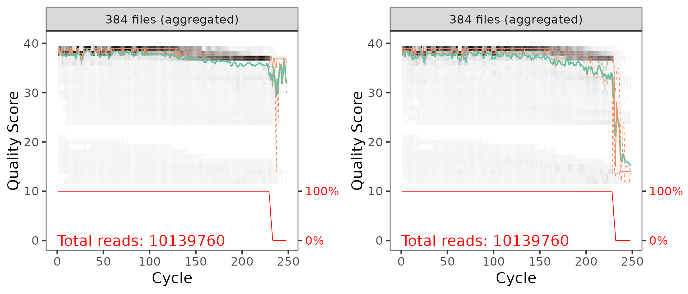
3. Filtering
We again make some path variables and setup a new directory of filtered reads.
out <- filterAndTrim(fnFs, filtFs, fnRs, filtRs,
truncLen=c(220,180),
maxN = 0, maxEE = 2, truncQ = 2,
rm.phix = TRUE, compress = TRUE,
multithread = 20)These parameters should be set based on the anticipated length of the amplicon and the read quality.
And here is a table of how the filtering step affected the number of reads in each sample.
4. Learn Error Rates
Now it is time to assess the error rate of the data. The DADA2 algorithm uses a parametric error model. Every amplicon data set has a different set of error rates and the learnErrors method learns this error model from the data. It does this by alternating estimation of the error rates and inference of sample composition until they converge on a jointly consistent solution. The algorithm begins with an initial guess, for which the maximum possible error rates in the data are used.
Forward Reads
errF <- learnErrors(filtFs, multithread = TRUE)112559480 total bases in 511634 reads from 28 samples
will be used for learning the error rates.We can then plot the error rates for the forward reads.
p3 <- plotErrors(errF, nominalQ = TRUE)
ggsave("figures/BCS_26_plot_errorF_1.png", p3, width = 7, height = 5)
ggsave("figures/BCS_26_plot_errorF_2.png", p3)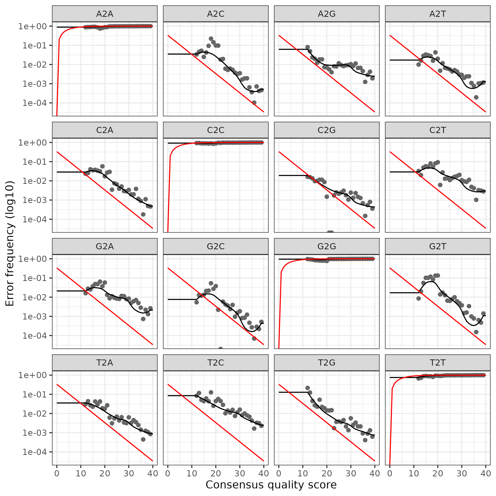
Reverse Reads
And now we can process the reverse read error rates.
errR <- learnErrors(filtRs, multithread = TRUE)100501560 total bases in 558342 reads from 31 samples
will be used for learning the error rates.p4 <- plotErrors(errR, nominalQ = TRUE)
ggsave("figures/BCS_26_plot_errorR_1.png", p4, width = 7, height = 5)
ggsave("figures/BCS_26_plot_errorR_2.png", p4)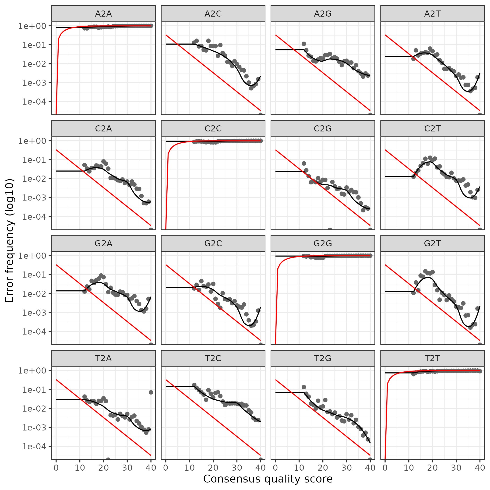
The error rates for each possible transition (A to C, A to G, etc.) are shown. Points are the observed error rates for each consensus quality score. The black line shows the estimated error rates after convergence of the machine-learning algorithm. The red line shows the error rates expected under the nominal definition of the Q-score. Here the estimated error rates (black line) are a good fit to the observed rates (points), and the error rates drop with increased quality as expected.
5. Dereplicate Reads
Now we can use derepFastq to identify the unique sequences in the forward and reverse fastq files.
6. DADA2 & ASV Inference
At this point we are ready to apply the core sample inference algorithm (dada) to the filtered and trimmed sequence data. DADA2 offers three options for whether and how to pool samples for ASV inference.
If pool = TRUE, the algorithm will pool together all samples prior to sample inference.
If pool = FALSE, sample inference is performed on each sample individually.
If pool = "pseudo", the algorithm will perform pseudo-pooling between individually processed samples.
For our final analysis, we chose pool = pseudo for this data set.
dadaFs <- dada(derepFs, err = errF, pool = "pseudo",
multithread = TRUE)
dadaRs <- dada(derepRs, err = errR, pool = "pseudo",
multithread = TRUE)As an example, we can inspect the returned dada-class object for the forward reads from the sample #1:
dadaFs[[1]]dada-class: object describing DADA2 denoising results
15 sequence variants were inferred from 813 input unique sequences.
Key parameters: OMEGA_A = 1e-40, OMEGA_C = 1e-40, BAND_SIZE = 16And the corresponding reverse reads.
dadaRs[[1]]dada-class: object describing DADA2 denoising results
13 sequence variants were inferred from 683 input unique sequences.
Key parameters: OMEGA_A = 1e-40, OMEGA_C = 1e-40, BAND_SIZE = 16These outputs tell us how many true sequence variants the DADA2 algorithm inferred from the unique sequences, in this case the sample 1.
7. Merge Paired Reads
We now merge the forward and reverse reads together to obtain the full denoised sequence dataset. Merging is performed by aligning the denoised forward reads with the reverse-complement of the corresponding denoised reverse reads, and then constructing the merged “contig” sequences. By default, merged sequences are only output if the forward and reverse reads overlap by at least 12 bases, and are identical to each other in the overlap region (but these conditions can be changed via function arguments).
mergers <- mergePairs(dadaFs, derepFs, dadaRs, derepRs)The mergers objects are lists of data.frames from each sample. Each data.frame contains the merged sequence, its abundance, and the indices of the forward and reverse sequence variants that were merged. Paired reads that did not exactly overlap were removed by mergePairs, further reducing spurious output.
8. Construct Sequence Table
Now we construct an amplicon sequence variant (ASV) table.
BCS_26 <- makeSequenceTable(mergers)
dim(BCS_26)Looks like we have 29430 sequence variants from 384 samples.
220 221 222 223 224 225 226 227 228 229 230 231 234
32 30 6 13 3 2 1 9 5 2 1 3 2
235 236 237 238 239 240 241 242 243 244 245 246 247
2 479 83 3 4 45 31 218 72 20 3 3 7
248 249 250 251 252 253 254 255 256 257 258 259 260
8 10 14 47 985 25810 1025 80 27 15 6 2 3
261 262 263 268 270 272 273 275 276 278 279 280 286
10 3 2 1 1 2 1 1 4 1 2 1 1
289 293 294 295 296 298 300 311 316 318 319 321 323
1 3 3 1 2 1 1 1 2 1 1 1 1
324 333 334 335 337 338 339 340 341 342 343 344 345
1 1 7 5 9 1 10 5 3 7 1 3 2
346 347 348 349 350 351 352 355 356 357 359 360 361
3 2 5 8 5 1 7 7 2 2 4 2 22
362 363 364 365 366 367 368 369 370 372 373 374 377
28 4 30 50 5 3 3 2 1 3 10 1 3
378
2 The sequence table is a matrix with rows corresponding to (and named by) the samples, and columns corresponding to (and named by) the sequence variants. We have 29430 sequence variants but also a range of sequence lengths. Since many of these sequence variants are singletons or doubletons, we can just select a range that corresponds to the expected amplicon length and eliminate the spurious reads. But we will do this step after merging sequence tables from all 6 runs.
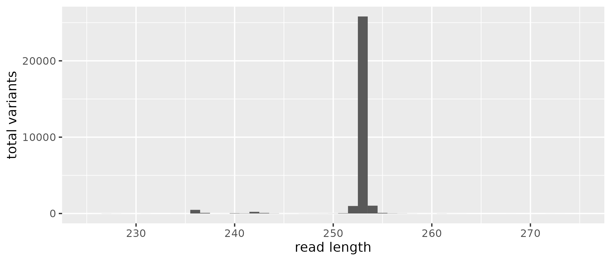
9. Tracking Reads
If you are interested how reads changed up to this point in the pipeline please see the Dada2 Data Portal page for more details.
And save the sequence table to an RDS file.
saveRDS(BCS_26, "BCS_26.rds")1. Set Working Environment
The following plate were sequenced in this run: ISTHMO S3, S4. Access the source code for BCS_28 processing.
First, we setup the working environment by defining a path for the working directory.
path <- "BCS_28/"
head(list.files(path)) [1] "Control_31_R1_001.trimmed.fastq" "Control_31_R2_001.trimmed.fastq"
[3] "Control_32_R1_001.trimmed.fastq" "Control_32_R2_001.trimmed.fastq"
[5] "Control_33_R1_001.trimmed.fastq" "Control_33_R2_001.trimmed.fastq"Then, we generate matched lists of the forward and reverse read files. We also parse out the sample name.
fnFs <- sort(list.files(path, pattern = "_R1_001.trimmed.fastq"))
fnRs <- sort(list.files(path, pattern = "_R2_001.trimmed.fastq"))
sample.names <- sapply(strsplit(fnFs, "_R1_"), `[`, 1)
fnFs <- file.path(path, fnFs)
fnRs <- file.path(path, fnRs)2. Plot quality scores
And next we plot a visual summary of the distribution of quality scores as a function of sequence position for the input fastq files. Here we set the number of records to sample from each fastq file (n) to 20000 reads.
qprofile_fwd <- plotQualityProfile(fnFs[1:x],
aggregate = TRUE,
n = 20000)
qprofile_rev <- plotQualityProfile(fnRs[1:x],
aggregate = TRUE,
n = 20000)
qprofile <- grid.arrange(qprofile_fwd, qprofile_rev, nrow = 1)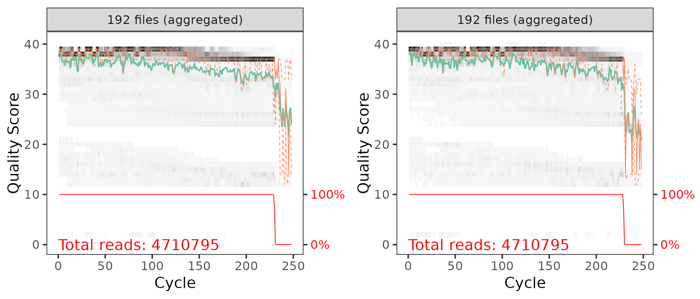
3. Filtering
We again make some path variables and setup a new directory of filtered reads.
out <- filterAndTrim(fnFs, filtFs, fnRs, filtRs,
truncLen=c(220,180),
maxN = 0, maxEE = 2, truncQ = 2,
rm.phix = TRUE, compress = TRUE,
multithread = 20)These parameters should be set based on the anticipated length of the amplicon and the read quality.
And here is a table of how the filtering step affected the number of reads in each sample.
4. Learn Error Rates
Now it is time to assess the error rate of the data. The DADA2 algorithm uses a parametric error model. Every amplicon data set has a different set of error rates and the learnErrors method learns this error model from the data. It does this by alternating estimation of the error rates and inference of sample composition until they converge on a jointly consistent solution. The algorithm begins with an initial guess, for which the maximum possible error rates in the data are used.
Forward Reads
errF <- learnErrors(filtFs, multithread = TRUE)100307240 total bases in 455942 reads from 31 samples
will be used for learning the error rates.We can then plot the error rates for the forward reads.
p3 <- plotErrors(errF, nominalQ = TRUE)
ggsave("figures/BCS_28_plot_errorF_1.png", p3, width = 7, height = 5)
ggsave("figures/BCS_28_plot_errorF_2.png", p3)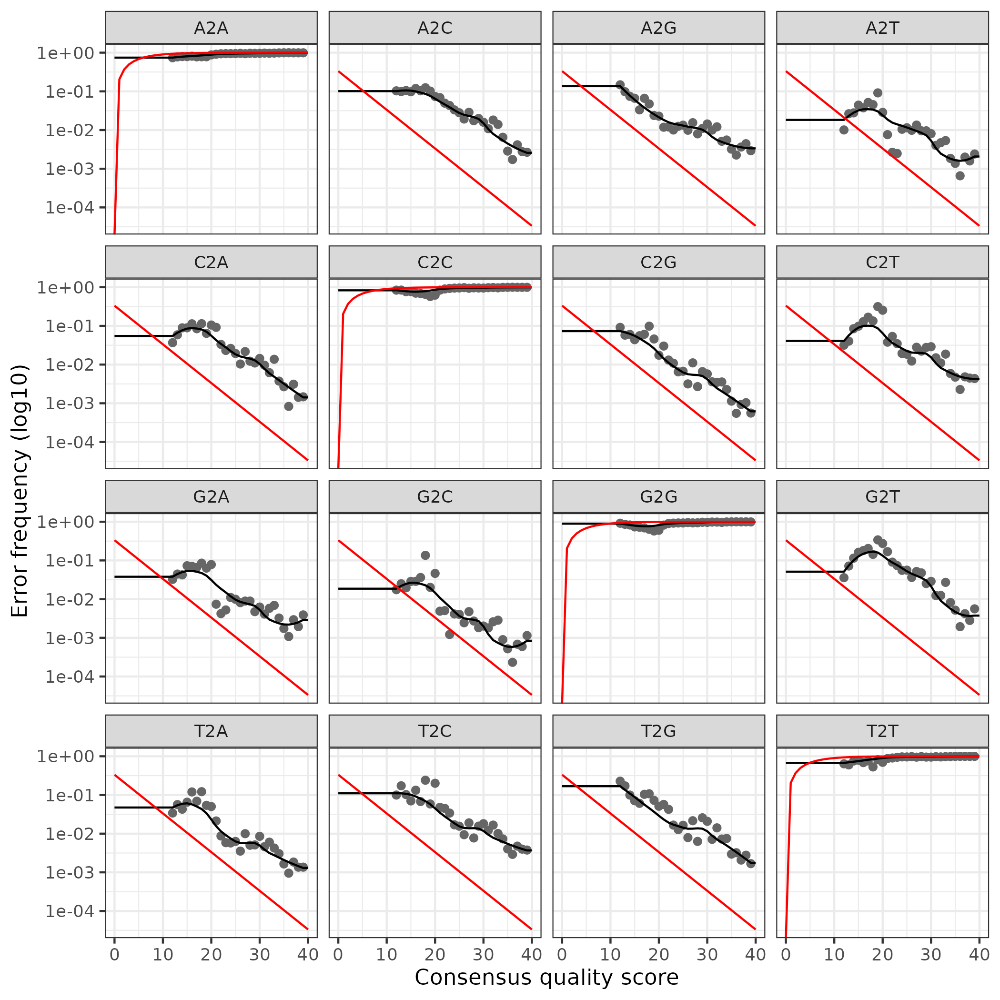
Reverse Reads
And now we can process the reverse read error rates.
errR <- learnErrors(filtRs, multithread = TRUE)103203360 total bases in 573352 reads from 36 samples
will be used for learning the error rates.p4 <- plotErrors(errR, nominalQ = TRUE)
ggsave("figures/BCS_28_plot_errorR_1.png", p4, width = 7, height = 5)
ggsave("figures/BCS_28_plot_errorR_2.png", p4)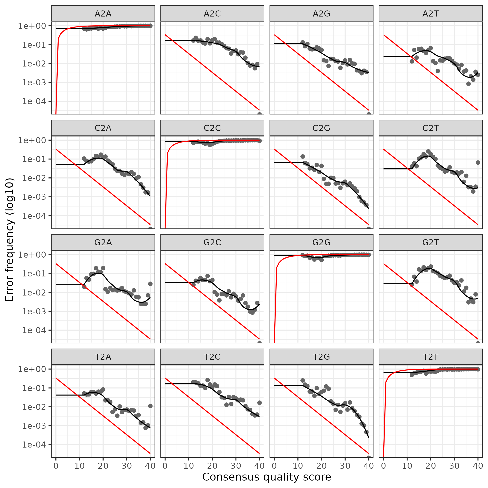
The error rates for each possible transition (A to C, A to G, etc.) are shown. Points are the observed error rates for each consensus quality score. The black line shows the estimated error rates after convergence of the machine-learning algorithm. The red line shows the error rates expected under the nominal definition of the Q-score. Here the estimated error rates (black line) are a good fit to the observed rates (points), and the error rates drop with increased quality as expected.
5. Dereplicate Reads
Now we can use derepFastq to identify the unique sequences in the forward and reverse fastq files.
6. DADA2 & ASV Inference
At this point we are ready to apply the core sample inference algorithm (dada) to the filtered and trimmed sequence data. DADA2 offers three options for whether and how to pool samples for ASV inference.
If pool = TRUE, the algorithm will pool together all samples prior to sample inference.
If pool = FALSE, sample inference is performed on each sample individually.
If pool = "pseudo", the algorithm will perform pseudo-pooling between individually processed samples.
For our final analysis, we chose pool = pseudo for this data set.
dadaFs <- dada(derepFs, err = errF, pool = "pseudo",
multithread = TRUE)
dadaRs <- dada(derepRs, err = errR, pool = "pseudo",
multithread = TRUE)As an example, we can inspect the returned dada-class object for the forward reads from the sample #1:
dadaFs[[1]]dada-class: object describing DADA2 denoising results
76 sequence variants were inferred from 8771 input unique sequences.
Key parameters: OMEGA_A = 1e-40, OMEGA_C = 1e-40, BAND_SIZE = 16And the corresponding reverse reads.
dadaRs[[1]]dada-class: object describing DADA2 denoising results
74 sequence variants were inferred from 6979 input unique sequences.
Key parameters: OMEGA_A = 1e-40, OMEGA_C = 1e-40, BAND_SIZE = 16These outputs tell us how many true sequence variants the DADA2 algorithm inferred from the unique sequences, in this case the sample 1.
7. Merge Paired Reads
We now merge the forward and reverse reads together to obtain the full denoised sequence dataset. Merging is performed by aligning the denoised forward reads with the reverse-complement of the corresponding denoised reverse reads, and then constructing the merged “contig” sequences. By default, merged sequences are only output if the forward and reverse reads overlap by at least 12 bases, and are identical to each other in the overlap region (but these conditions can be changed via function arguments).
mergers <- mergePairs(dadaFs, derepFs, dadaRs, derepRs)The mergers objects are lists of data.frames from each sample. Each data.frame contains the merged sequence, its abundance, and the indices of the forward and reverse sequence variants that were merged. Paired reads that did not exactly overlap were removed by mergePairs, further reducing spurious output.
8. Construct Sequence Table
Now we construct an amplicon sequence variant (ASV) table.
BCS_28 <- makeSequenceTable(mergers)
dim(BCS_28)Looks like we have 9461 sequence variants from 192 samples.
220 221 222 223 224 227 230 231 236 237 238 239 241 242 243 244
3 8 2 1 1 4 1 1 1 2 1 1 2 5 1 1
245 246 247 248 249 250 251 252 253 254 255 256 257 258 259 268
1 1 2 1 1 4 8 328 8699 252 21 9 6 1 1 1
270 292 318 335 336 337 338 339 341 342 344 345 348 357 359 361
1 1 1 1 2 2 1 1 2 3 1 1 3 1 1 5
362 363 364 365 366 367 368 372 373 374 376 378 385 388
8 3 22 13 1 1 8 1 1 1 1 1 1 1 The sequence table is a matrix with rows corresponding to (and named by) the samples, and columns corresponding to (and named by) the sequence variants. We have 9461 sequence variants but also a range of sequence lengths. Since many of these sequence variants are singletons or doubletons, we can just select a range that corresponds to the expected amplicon length and eliminate the spurious reads. But we will do this step after merging sequence tables from all 6 runs.
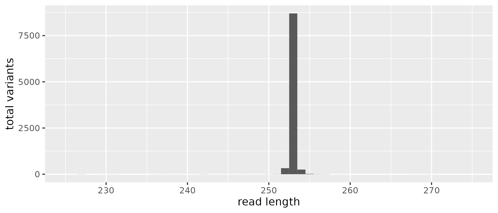
9. Tracking Reads
If you are interested how reads changed up to this point in the pipeline please see the Dada2 Data Portal page for more details.
And save the sequence table to an RDS file.
saveRDS(BCS_28, "BCS_28.rds")1. Set Working Environment
The following plate were sequenced in this run: ISTHMO S13, S14, S15, S16. Access the source code for BCS_29 processing.
First, we setup the working environment by defining a path for the working directory.
path <- "BCS_29/"
head(list.files(path)) [1] "Control_37_R1_001.trimmed.fastq" "Control_37_R2_001.trimmed.fastq"
[3] "Control_38_R1_001.trimmed.fastq" "Control_38_R2_001.trimmed.fastq"
[5] "Control_39_R1_001.trimmed.fastq" "Control_39_R2_001.trimmed.fastq"Then, we generate matched lists of the forward and reverse read files. We also parse out the sample name.
fnFs <- sort(list.files(path, pattern = "_R1_001.trimmed.fastq"))
fnRs <- sort(list.files(path, pattern = "_R2_001.trimmed.fastq"))
sample.names <- sapply(strsplit(fnFs, "_R1_"), `[`, 1)
fnFs <- file.path(path, fnFs)
fnRs <- file.path(path, fnRs)2. Plot quality scores
And next we plot a visual summary of the distribution of quality scores as a function of sequence position for the input fastq files. Here we set the number of records to sample from each fastq file (n) to 20000 reads.
qprofile_fwd <- plotQualityProfile(fnFs[1:x],
aggregate = TRUE,
n = 20000)
qprofile_rev <- plotQualityProfile(fnRs[1:x],
aggregate = TRUE,
n = 20000)
qprofile <- grid.arrange(qprofile_fwd, qprofile_rev, nrow = 1)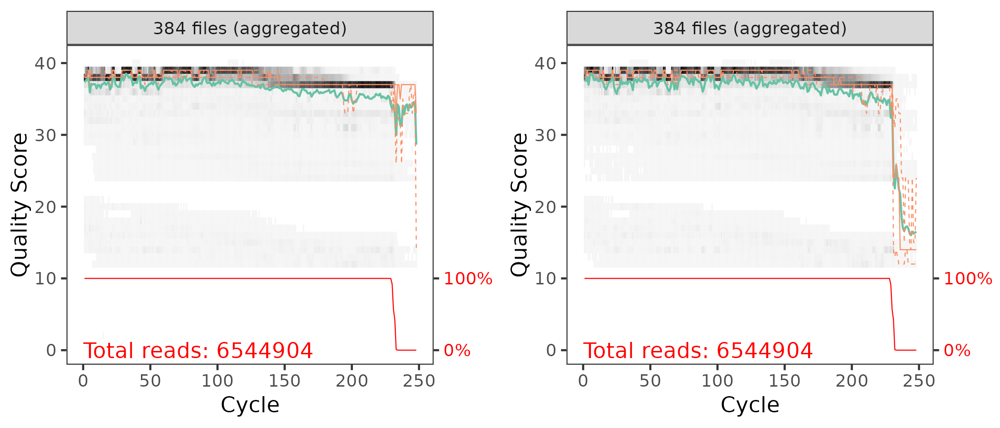
3. Filtering
We again make some path variables and setup a new directory of filtered reads.
out <- filterAndTrim(fnFs, filtFs, fnRs, filtRs,
truncLen=c(220,180),
maxN = 0, maxEE = 2, truncQ = 2,
rm.phix = TRUE, compress = TRUE,
multithread = 20)These parameters should be set based on the anticipated length of the amplicon and the read quality.
And here is a table of how the filtering step affected the number of reads in each sample.
4. Learn Error Rates
Now it is time to assess the error rate of the data. The DADA2 algorithm uses a parametric error model. Every amplicon data set has a different set of error rates and the learnErrors method learns this error model from the data. It does this by alternating estimation of the error rates and inference of sample composition until they converge on a jointly consistent solution. The algorithm begins with an initial guess, for which the maximum possible error rates in the data are used.
Forward Reads
errF <- learnErrors(filtFs, multithread = TRUE)104777640 total bases in 476262 reads from 36 samples
will be used for learning the error rates.We can then plot the error rates for the forward reads.
p3 <- plotErrors(errF, nominalQ = TRUE)
ggsave("figures/BCS_29_plot_errorF_1.png", p3, width = 7, height = 5)
ggsave("figures/BCS_29_plot_errorF_2.png", p3)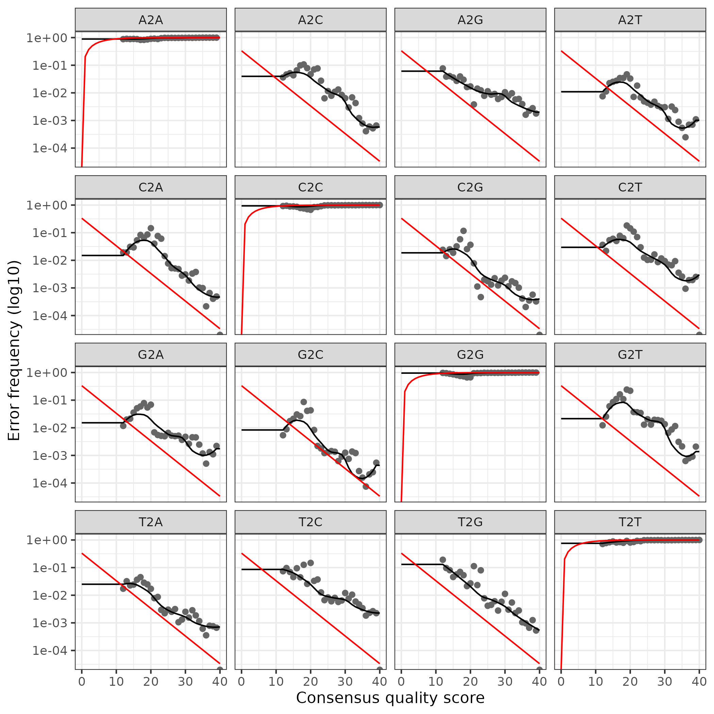
Reverse Reads
And now we can process the reverse read error rates.
errR <- learnErrors(filtRs, multithread = TRUE)103229460 total bases in 573497 reads from 43 samples
will be used for learning the error rates.p4 <- plotErrors(errR, nominalQ = TRUE)
ggsave("figures/BCS_29_plot_errorR_1.png", p4, width = 7, height = 5)
ggsave("figures/BCS_29_plot_errorR_2.png", p4)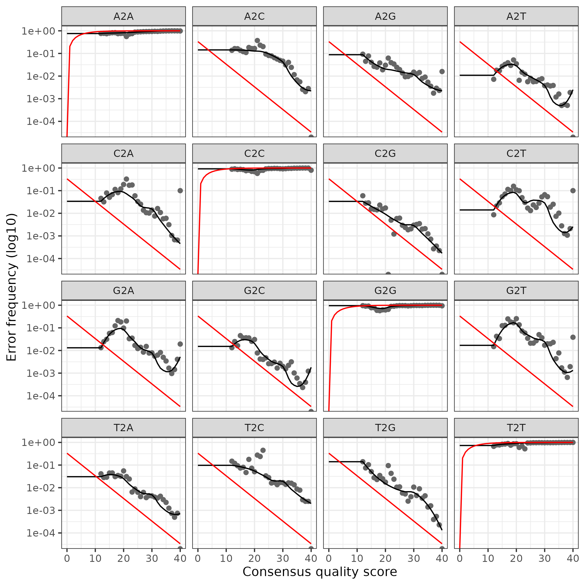
The error rates for each possible transition (A to C, A to G, etc.) are shown. Points are the observed error rates for each consensus quality score. The black line shows the estimated error rates after convergence of the machine-learning algorithm. The red line shows the error rates expected under the nominal definition of the Q-score. Here the estimated error rates (black line) are a good fit to the observed rates (points), and the error rates drop with increased quality as expected.
5. Dereplicate Reads
Now we can use derepFastq to identify the unique sequences in the forward and reverse fastq files.
6. DADA2 & ASV Inference
At this point we are ready to apply the core sample inference algorithm (dada) to the filtered and trimmed sequence data. DADA2 offers three options for whether and how to pool samples for ASV inference.
If pool = TRUE, the algorithm will pool together all samples prior to sample inference.
If pool = FALSE, sample inference is performed on each sample individually.
If pool = "pseudo", the algorithm will perform pseudo-pooling between individually processed samples.
For our final analysis, we chose pool = pseudo for this data set.
dadaFs <- dada(derepFs, err = errF, pool = "pseudo",
multithread = TRUE)
dadaRs <- dada(derepRs, err = errR, pool = "pseudo",
multithread = TRUE)As an example, we can inspect the returned dada-class object for the forward reads from the sample #1:
dadaFs[[1]]dada-class: object describing DADA2 denoising results
46 sequence variants were inferred from 3108 input unique sequences.
Key parameters: OMEGA_A = 1e-40, OMEGA_C = 1e-40, BAND_SIZE = 16And the corresponding reverse reads.
dadaRs[[1]]dada-class: object describing DADA2 denoising results
44 sequence variants were inferred from 2744 input unique sequences.
Key parameters: OMEGA_A = 1e-40, OMEGA_C = 1e-40, BAND_SIZE = 16These outputs tell us how many true sequence variants the DADA2 algorithm inferred from the unique sequences, in this case the sample 1.
7. Merge Paired Reads
We now merge the forward and reverse reads together to obtain the full denoised sequence dataset. Merging is performed by aligning the denoised forward reads with the reverse-complement of the corresponding denoised reverse reads, and then constructing the merged “contig” sequences. By default, merged sequences are only output if the forward and reverse reads overlap by at least 12 bases, and are identical to each other in the overlap region (but these conditions can be changed via function arguments).
mergers <- mergePairs(dadaFs, derepFs, dadaRs, derepRs)The mergers objects are lists of data.frames from each sample. Each data.frame contains the merged sequence, its abundance, and the indices of the forward and reverse sequence variants that were merged. Paired reads that did not exactly overlap were removed by mergePairs, further reducing spurious output.
8. Construct Sequence Table
Now we construct an amplicon sequence variant (ASV) table.
BCS_29 <- makeSequenceTable(mergers)
dim(BCS_29)Looks like we have 21105 sequence variants from 384 samples.
220 221 222 223 224 225 226 227 228 229 231 234 236
16 22 1 10 5 5 2 10 1 2 11 3 518
237 238 240 241 242 243 244 245 246 247 248 249 250
3 7 8 155 11 81 1 2 4 4 1 2 8
251 252 253 254 255 256 257 258 260 262 269 270 272
28 690 18300 857 42 17 18 1 1 2 1 1 1
273 274 275 277 278 281 286 288 292 293 294 297 300
1 1 1 1 3 1 1 1 1 2 2 1 1
303 304 305 308 313 315 318 319 329 330 334 335 336
2 1 3 1 2 1 1 1 3 2 3 1 1
337 339 340 341 342 343 344 347 348 349 350 352 356
2 4 5 21 7 1 1 1 2 3 1 1 2
357 358 359 360 361 362 363 364 365 366 367 368 370
14 1 2 6 14 65 4 32 13 4 2 2 2
379 384
1 1 The sequence table is a matrix with rows corresponding to (and named by) the samples, and columns corresponding to (and named by) the sequence variants. We have 21105 sequence variants but also a range of sequence lengths. Since many of these sequence variants are singletons or doubletons, we can just select a range that corresponds to the expected amplicon length and eliminate the spurious reads. But we will do this step after merging sequence tables from all 6 runs.
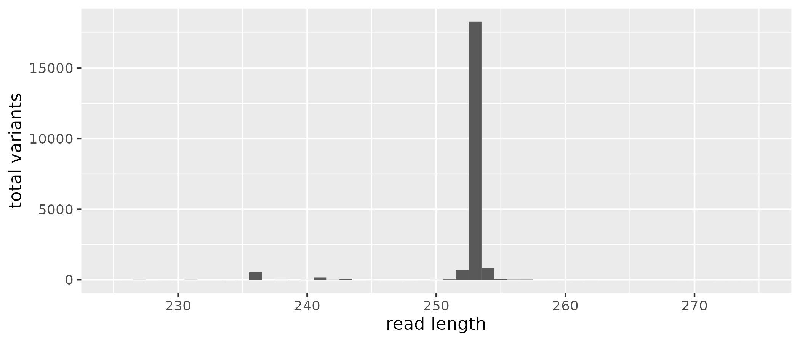
9. Tracking Reads
If you are interested how reads changed up to this point in the pipeline please see the Dada2 Data Portal page for more details.
And save the sequence table to an RDS file.
saveRDS(BCS_29, "BCS_29.rds")1. Set Working Environment
The following plate were sequenced in this run: ISTHMO S17, S18, S19, S20. Access the source code for BCS_30 processing.
First, we setup the working environment by defining a path for the working directory.
path <- "BCS_30/"
head(list.files(path)) [1] "Control_49_R1_001.trimmed.fastq" "Control_49_R2_001.trimmed.fastq"
[3] "Control_50_R1_001.trimmed.fastq" "Control_50_R2_001.trimmed.fastq"
[5] "Control_51_R1_001.trimmed.fastq" "Control_51_R2_001.trimmed.fastq"Then, we generate matched lists of the forward and reverse read files. We also parse out the sample name.
fnFs <- sort(list.files(path, pattern = "_R1_001.trimmed.fastq"))
fnRs <- sort(list.files(path, pattern = "_R2_001.trimmed.fastq"))
sample.names <- sapply(strsplit(fnFs, "_R1_"), `[`, 1)
fnFs <- file.path(path, fnFs)
fnRs <- file.path(path, fnRs)2. Plot quality scores
And next we plot a visual summary of the distribution of quality scores as a function of sequence position for the input fastq files. Here we set the number of records to sample from each fastq file (n) to 20000 reads.
qprofile_fwd <- plotQualityProfile(fnFs[1:x],
aggregate = TRUE,
n = 20000)
qprofile_rev <- plotQualityProfile(fnRs[1:x],
aggregate = TRUE,
n = 20000)
qprofile <- grid.arrange(qprofile_fwd, qprofile_rev, nrow = 1)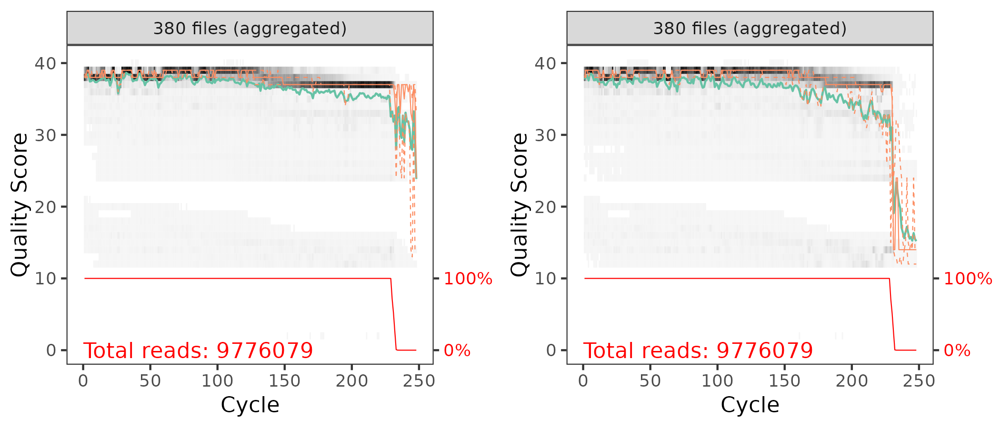
3. Filtering
We again make some path variables and setup a new directory of filtered reads.
out <- filterAndTrim(fnFs, filtFs, fnRs, filtRs,
truncLen=c(220,180),
maxN = 0, maxEE = 2, truncQ = 2,
rm.phix = TRUE, compress = TRUE,
multithread = 20)These parameters should be set based on the anticipated length of the amplicon and the read quality.
And here is a table of how the filtering step affected the number of reads in each sample.
4. Learn Error Rates
Now it is time to assess the error rate of the data. The DADA2 algorithm uses a parametric error model. Every amplicon data set has a different set of error rates and the learnErrors method learns this error model from the data. It does this by alternating estimation of the error rates and inference of sample composition until they converge on a jointly consistent solution. The algorithm begins with an initial guess, for which the maximum possible error rates in the data are used.
Forward Reads
errF <- learnErrors(filtFs, multithread = TRUE)101887500 total bases in 463125 reads from 26 samples
will be used for learning the error rates.We can then plot the error rates for the forward reads.
p3 <- plotErrors(errF, nominalQ = TRUE)
ggsave("figures/BCS_30_plot_errorF_1.png", p3, width = 7, height = 5)
ggsave("figures/BCS_30_plot_errorF_2.png", p3)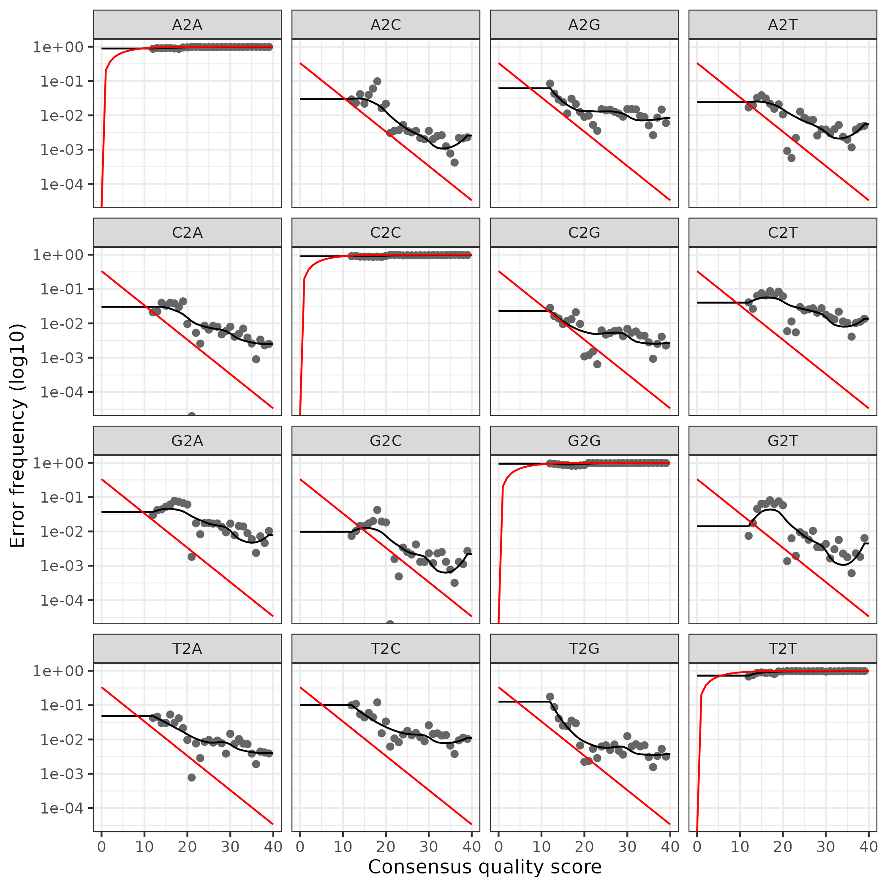
Reverse Reads
And now we can process the reverse read error rates.
errR <- learnErrors(filtRs, multithread = TRUE)105320340 total bases in 585113 reads from 30 samples
will be used for learning the error rates.p4 <- plotErrors(errR, nominalQ = TRUE)
ggsave("figures/BCS_30_plot_errorR_1.png", p4, width = 7, height = 5)
ggsave("figures/BCS_30_plot_errorR_2.png", p4)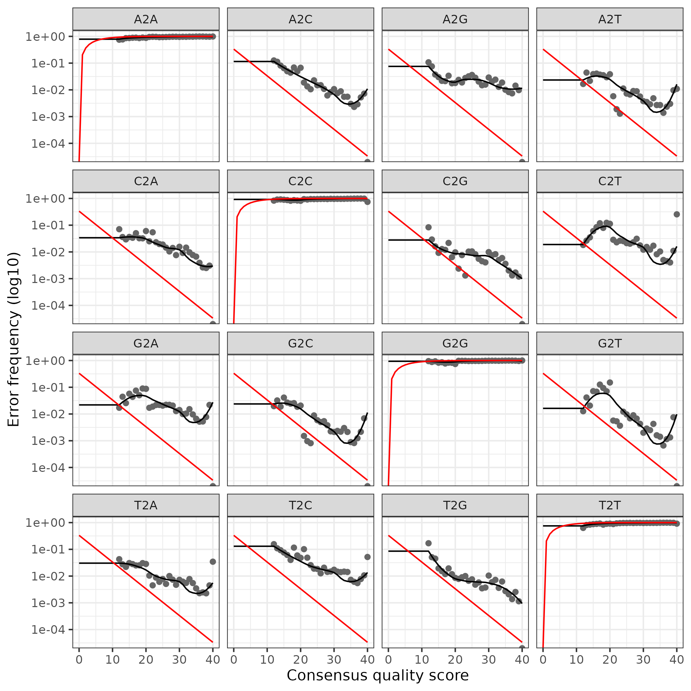
The error rates for each possible transition (A to C, A to G, etc.) are shown. Points are the observed error rates for each consensus quality score. The black line shows the estimated error rates after convergence of the machine-learning algorithm. The red line shows the error rates expected under the nominal definition of the Q-score. Here the estimated error rates (black line) are a good fit to the observed rates (points), and the error rates drop with increased quality as expected.
5. Dereplicate Reads
Now we can use derepFastq to identify the unique sequences in the forward and reverse fastq files.
6. DADA2 & ASV Inference
At this point we are ready to apply the core sample inference algorithm (dada) to the filtered and trimmed sequence data. DADA2 offers three options for whether and how to pool samples for ASV inference.
If pool = TRUE, the algorithm will pool together all samples prior to sample inference.
If pool = FALSE, sample inference is performed on each sample individually.
If pool = "pseudo", the algorithm will perform pseudo-pooling between individually processed samples.
For our final analysis, we chose pool = pseudo for this data set.
dadaFs <- dada(derepFs, err = errF, pool = "pseudo",
multithread = TRUE)
dadaRs <- dada(derepRs, err = errR, pool = "pseudo",
multithread = TRUE)As an example, we can inspect the returned dada-class object for the forward reads from the sample #1:
dadaFs[[1]]dada-class: object describing DADA2 denoising results
9 sequence variants were inferred from 25 input unique sequences.
Key parameters: OMEGA_A = 1e-40, OMEGA_C = 1e-40, BAND_SIZE = 16And the corresponding reverse reads.
dadaRs[[1]]dada-class: object describing DADA2 denoising results
9 sequence variants were inferred from 21 input unique sequences.
Key parameters: OMEGA_A = 1e-40, OMEGA_C = 1e-40, BAND_SIZE = 16These outputs tell us how many true sequence variants the DADA2 algorithm inferred from the unique sequences, in this case the sample 1.
7. Merge Paired Reads
We now merge the forward and reverse reads together to obtain the full denoised sequence dataset. Merging is performed by aligning the denoised forward reads with the reverse-complement of the corresponding denoised reverse reads, and then constructing the merged “contig” sequences. By default, merged sequences are only output if the forward and reverse reads overlap by at least 12 bases, and are identical to each other in the overlap region (but these conditions can be changed via function arguments).
mergers <- mergePairs(dadaFs, derepFs, dadaRs, derepRs)The mergers objects are lists of data.frames from each sample. Each data.frame contains the merged sequence, its abundance, and the indices of the forward and reverse sequence variants that were merged. Paired reads that did not exactly overlap were removed by mergePairs, further reducing spurious output.
8. Construct Sequence Table
Now we construct an amplicon sequence variant (ASV) table.
BCS_30 <- makeSequenceTable(mergers)
dim(BCS_30)Looks like we have 36401 sequence variants from 380 samples.
220 221 222 223 224 225 226 227 228 229 231 232 234
45 24 5 12 10 3 2 13 2 1 15 2 3
235 236 237 238 240 241 242 243 244 245 246 247 248
5 142 2 29 33 128 26 266 5 3 4 10 8
249 250 251 252 253 254 255 256 257 258 259 260 261
7 16 62 1119 31980 1708 149 56 47 7 6 2 4
262 263 264 267 268 269 270 271 272 273 274 276 278
3 1 2 1 1 1 4 7 1 2 2 1 5
279 282 284 285 286 288 289 291 292 293 294 295 296
1 1 1 3 1 1 2 1 1 5 1 1 1
297 298 303 305 307 308 311 313 316 317 319 320 321
1 1 1 2 1 1 2 2 2 1 2 1 1
322 323 325 326 328 332 333 334 335 336 337 338 339
2 1 2 1 2 1 1 2 1 6 3 3 5
340 341 342 343 344 345 347 348 349 350 351 352 353
2 21 23 4 2 4 8 6 6 3 1 2 1
354 355 356 357 358 359 360 361 362 363 364 365 366
1 1 3 6 2 8 9 76 58 18 33 22 5
368 371 372 373 379 380 387
8 1 1 1 2 1 2 The sequence table is a matrix with rows corresponding to (and named by) the samples, and columns corresponding to (and named by) the sequence variants. We have 36401 sequence variants but also a range of sequence lengths. Since many of these sequence variants are singletons or doubletons, we can just select a range that corresponds to the expected amplicon length and eliminate the spurious reads. But we will do this step after merging sequence tables from all 6 runs.
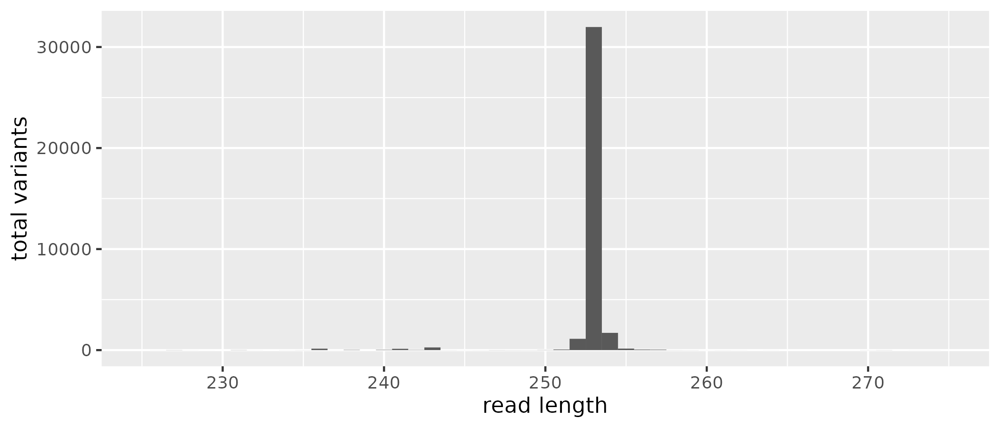
9. Tracking Reads
If you are interested how reads changed up to this point in the pipeline please see the Dada2 Data Portal page for more details.
And save the sequence table to an RDS file.
saveRDS(BCS_30, "BCS_30.rds")1. Set Working Environment
The following plate were sequenced in this run: ISTHMO S01, S02. Access the source code for BCS_34 processing.
First, we setup the working environment by defining a path for the working directory.
path <- "BCS_34/"
head(list.files(path)) [1] "Control_25_R1_001.trimmed.fastq" "Control_25_R2_001.trimmed.fastq"
[3] "Control_26_R1_001.trimmed.fastq" "Control_26_R2_001.trimmed.fastq"
[5] "Control_27_R1_001.trimmed.fastq" "Control_27_R2_001.trimmed.fastq"Then, we generate matched lists of the forward and reverse read files. We also parse out the sample name.
fnFs <- sort(list.files(path, pattern = "_R1_001.trimmed.fastq"))
fnRs <- sort(list.files(path, pattern = "_R2_001.trimmed.fastq"))
sample.names <- sapply(strsplit(fnFs, "_R1_"), `[`, 1)
fnFs <- file.path(path, fnFs)
fnRs <- file.path(path, fnRs)2. Plot quality scores
And next we plot a visual summary of the distribution of quality scores as a function of sequence position for the input fastq files. Here we set the number of records to sample from each fastq file (n) to 20000 reads.
qprofile_fwd <- plotQualityProfile(fnFs[1:x],
aggregate = TRUE,
n = 20000)
qprofile_rev <- plotQualityProfile(fnRs[1:x],
aggregate = TRUE,
n = 20000)
qprofile <- grid.arrange(qprofile_fwd, qprofile_rev, nrow = 1)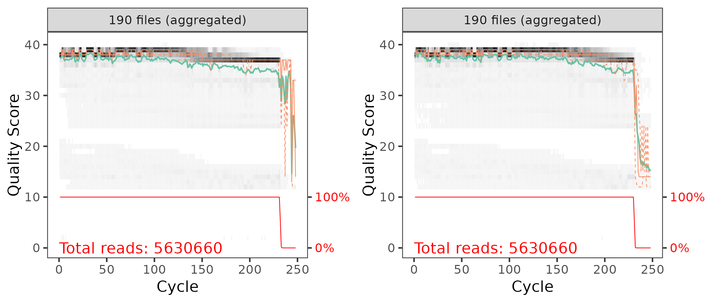
3. Filtering
We again make some path variables and setup a new directory of filtered reads.
out <- filterAndTrim(fnFs, filtFs, fnRs, filtRs,
truncLen=c(220,180),
maxN = 0, maxEE = 2, truncQ = 2,
rm.phix = TRUE, compress = TRUE,
multithread = 20)These parameters should be set based on the anticipated length of the amplicon and the read quality.
And here is a table of how the filtering step affected the number of reads in each sample.
4. Learn Error Rates
Now it is time to assess the error rate of the data. The DADA2 algorithm uses a parametric error model. Every amplicon data set has a different set of error rates and the learnErrors method learns this error model from the data. It does this by alternating estimation of the error rates and inference of sample composition until they converge on a jointly consistent solution. The algorithm begins with an initial guess, for which the maximum possible error rates in the data are used.
Forward Reads
errF <- learnErrors(filtFs, multithread = TRUE)100938640 total bases in 458812 reads from 22 samples
will be used for learning the error rates.We can then plot the error rates for the forward reads.
p3 <- plotErrors(errF, nominalQ = TRUE)
ggsave("figures/BCS_34_plot_errorF_1.png", p3, width = 7, height = 5)
ggsave("figures/BCS_34_plot_errorF_2.png", p3)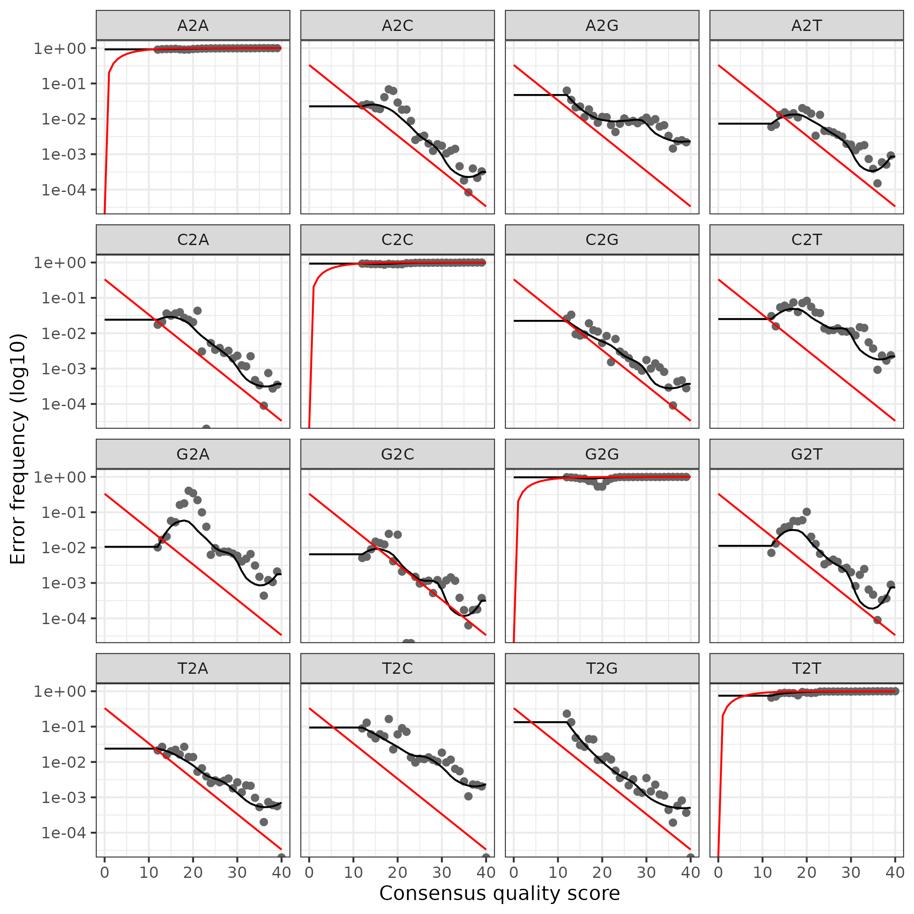
Reverse Reads
And now we can process the reverse read error rates.
errR <- learnErrors(filtRs, multithread = TRUE)104387760 total bases in 579932 reads from 25 samples
will be used for learning the error rates.p4 <- plotErrors(errR, nominalQ = TRUE)
ggsave("figures/BCS_34_plot_errorR_1.png", p4, width = 7, height = 5)
ggsave("figures/BCS_34_plot_errorR_2.png", p4)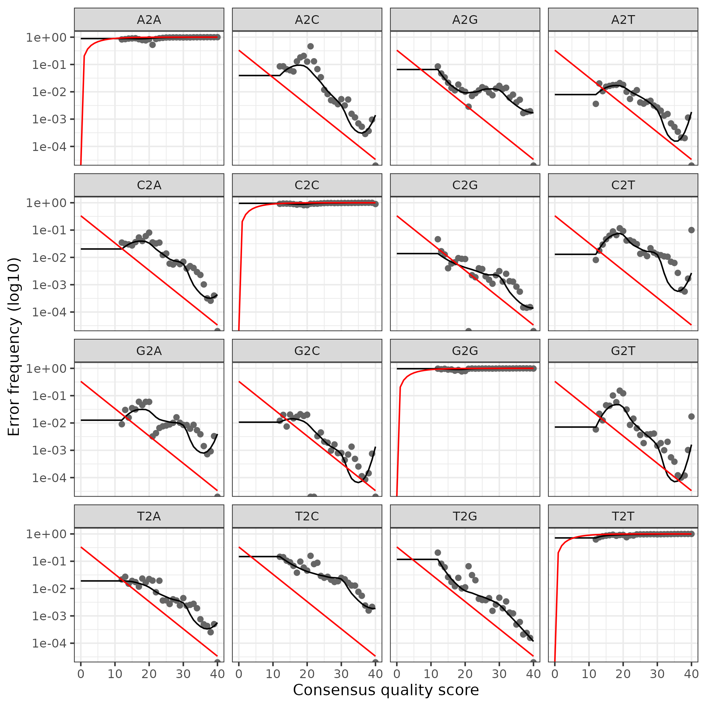
The error rates for each possible transition (A to C, A to G, etc.) are shown. Points are the observed error rates for each consensus quality score. The black line shows the estimated error rates after convergence of the machine-learning algorithm. The red line shows the error rates expected under the nominal definition of the Q-score. Here the estimated error rates (black line) are a good fit to the observed rates (points), and the error rates drop with increased quality as expected.
5. Dereplicate Reads
Now we can use derepFastq to identify the unique sequences in the forward and reverse fastq files.
6. DADA2 & ASV Inference
At this point we are ready to apply the core sample inference algorithm (dada) to the filtered and trimmed sequence data. DADA2 offers three options for whether and how to pool samples for ASV inference.
If pool = TRUE, the algorithm will pool together all samples prior to sample inference.
If pool = FALSE, sample inference is performed on each sample individually.
If pool = "pseudo", the algorithm will perform pseudo-pooling between individually processed samples.
For our final analysis, we chose pool = pseudo for this data set.
dadaFs <- dada(derepFs, err = errF, pool = "pseudo",
multithread = TRUE)
dadaRs <- dada(derepRs, err = errR, pool = "pseudo",
multithread = TRUE)As an example, we can inspect the returned dada-class object for the forward reads from the sample #1:
dadaFs[[1]]dada-class: object describing DADA2 denoising results
9 sequence variants were inferred from 327 input unique sequences.
Key parameters: OMEGA_A = 1e-40, OMEGA_C = 1e-40, BAND_SIZE = 16And the corresponding reverse reads.
dadaRs[[1]]dada-class: object describing DADA2 denoising results
8 sequence variants were inferred from 255 input unique sequences.
Key parameters: OMEGA_A = 1e-40, OMEGA_C = 1e-40, BAND_SIZE = 16These outputs tell us how many true sequence variants the DADA2 algorithm inferred from the unique sequences, in this case the sample 1.
7. Merge Paired Reads
We now merge the forward and reverse reads together to obtain the full denoised sequence dataset. Merging is performed by aligning the denoised forward reads with the reverse-complement of the corresponding denoised reverse reads, and then constructing the merged “contig” sequences. By default, merged sequences are only output if the forward and reverse reads overlap by at least 12 bases, and are identical to each other in the overlap region (but these conditions can be changed via function arguments).
mergers <- mergePairs(dadaFs, derepFs, dadaRs, derepRs)The mergers objects are lists of data.frames from each sample. Each data.frame contains the merged sequence, its abundance, and the indices of the forward and reverse sequence variants that were merged. Paired reads that did not exactly overlap were removed by mergePairs, further reducing spurious output.
8. Construct Sequence Table
Now we construct an amplicon sequence variant (ASV) table.
BCS_34 <- makeSequenceTable(mergers)
dim(BCS_34)Looks like we have 18373 sequence variants from 190 samples.
220 221 222 223 224 225 226 227 229 230 231 234 236
14 21 2 6 1 2 2 9 1 1 2 2 101
237 238 239 241 242 243 244 245 246 247 248 249 250
62 1 1 11 16 6 4 4 4 2 4 5 6
251 252 253 254 255 256 257 258 259 261 265 270 271
20 697 16533 584 52 15 11 5 1 2 1 2 1
274 278 279 285 286 290 291 295 308 309 322 325 328
1 1 1 1 1 1 1 1 1 1 1 1 1
335 336 337 338 339 340 341 342 343 344 345 347 348
2 1 4 1 5 1 4 8 2 3 2 1 5
349 356 357 358 359 360 361 362 363 364 365 366 367
1 1 1 3 2 1 14 15 8 25 16 2 1
368 371 372 373 376 377 378 385 386
3 2 2 4 2 1 1 1 1 The sequence table is a matrix with rows corresponding to (and named by) the samples, and columns corresponding to (and named by) the sequence variants. We have 18373 sequence variants but also a range of sequence lengths. Since many of these sequence variants are singletons or doubletons, we can just select a range that corresponds to the expected amplicon length and eliminate the spurious reads. But we will do this step after merging sequence tables from all 6 runs.
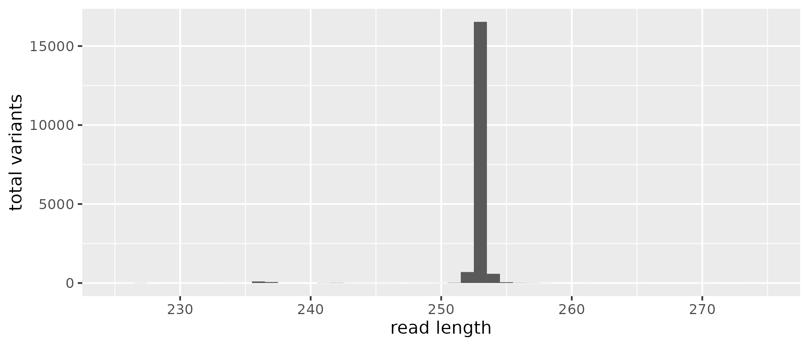
9. Tracking Reads
If you are interested how reads changed up to this point in the pipeline please see the Dada2 Data Portal page for more details.
And save the sequence table to an RDS file.
saveRDS(BCS_34, "BCS_34.rds")1. Set Working Environment
The following plate were sequenced in this run: ISTHMO S9, S10, S11, S12. Access the source code for BCS_35 processing.
First, we setup the working environment by defining a path for the working directory.
path <- "BCS_35/"
head(list.files(path)) [1] "Control_13_R1_001.trimmed.fastq" "Control_13_R2_001.trimmed.fastq"
[3] "Control_14_R1_001.trimmed.fastq" "Control_14_R2_001.trimmed.fastq"
[5] "Control_15_R1_001.trimmed.fastq" "Control_15_R2_001.trimmed.fastq"Then, we generate matched lists of the forward and reverse read files. We also parse out the sample name.
fnFs <- sort(list.files(path, pattern = "_R1_001.trimmed.fastq"))
fnRs <- sort(list.files(path, pattern = "_R2_001.trimmed.fastq"))
sample.names <- sapply(strsplit(fnFs, "_R1_"), `[`, 1)
fnFs <- file.path(path, fnFs)
fnRs <- file.path(path, fnRs)2. Plot quality scores
And next we plot a visual summary of the distribution of quality scores as a function of sequence position for the input fastq files. Here we set the number of records to sample from each fastq file (n) to 20000 reads.
qprofile_fwd <- plotQualityProfile(fnFs[1:x],
aggregate = TRUE,
n = 20000)
qprofile_rev <- plotQualityProfile(fnRs[1:x],
aggregate = TRUE,
n = 20000)
qprofile <- grid.arrange(qprofile_fwd, qprofile_rev, nrow = 1)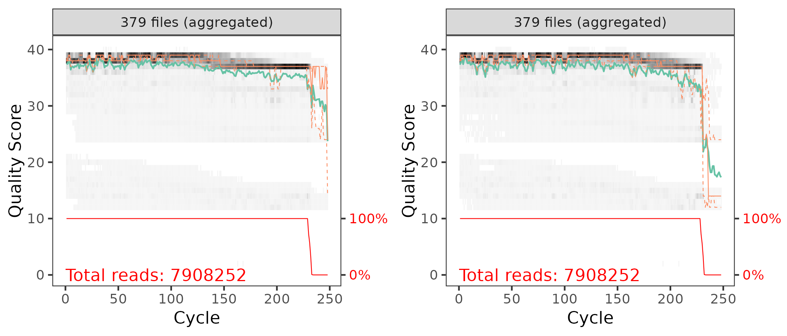
3. Filtering
We again make some path variables and setup a new directory of filtered reads.
out <- filterAndTrim(fnFs, filtFs, fnRs, filtRs,
truncLen=c(220,180),
maxN = 0, maxEE = 2, truncQ = 2,
rm.phix = TRUE, compress = TRUE,
multithread = 20)These parameters should be set based on the anticipated length of the amplicon and the read quality.
And here is a table of how the filtering step affected the number of reads in each sample.
4. Learn Error Rates
Now it is time to assess the error rate of the data. The DADA2 algorithm uses a parametric error model. Every amplicon data set has a different set of error rates and the learnErrors method learns this error model from the data. It does this by alternating estimation of the error rates and inference of sample composition until they converge on a jointly consistent solution. The algorithm begins with an initial guess, for which the maximum possible error rates in the data are used.
Forward Reads
errF <- learnErrors(filtFs, multithread = TRUE)101017840 total bases in 459172 reads from 48 samples
will be used for learning the error rates.We can then plot the error rates for the forward reads.
p3 <- plotErrors(errF, nominalQ = TRUE)
ggsave("figures/BCS_35_plot_errorF_1.png", p3, width = 7, height = 5)
ggsave("figures/BCS_35_plot_errorF_2.png", p3)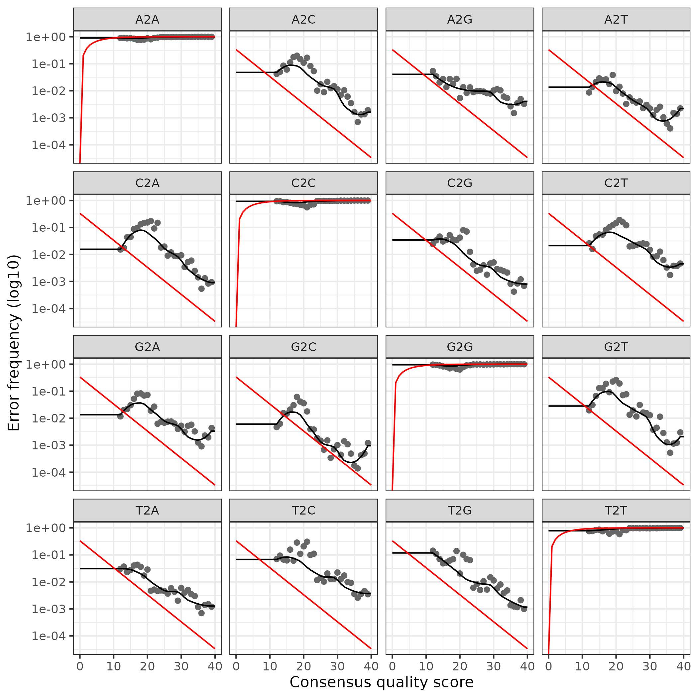
Reverse Reads
And now we can process the reverse read error rates.
errR <- learnErrors(filtRs, multithread = TRUE)100695240 total bases in 559418 reads from 59 samples
will be used for learning the error rates.p4 <- plotErrors(errR, nominalQ = TRUE)
ggsave("figures/BCS_35_plot_errorR_1.png", p4, width = 7, height = 5)
ggsave("figures/BCS_35_plot_errorR_2.png", p4)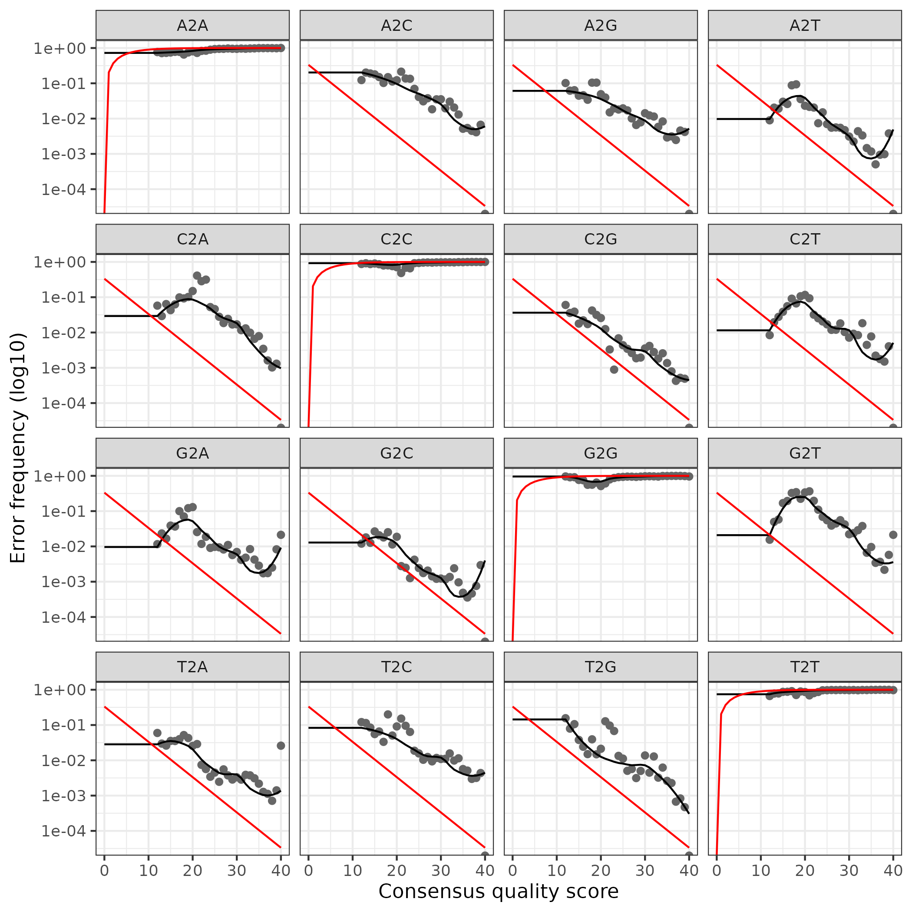
The error rates for each possible transition (A to C, A to G, etc.) are shown. Points are the observed error rates for each consensus quality score. The black line shows the estimated error rates after convergence of the machine-learning algorithm. The red line shows the error rates expected under the nominal definition of the Q-score. Here the estimated error rates (black line) are a good fit to the observed rates (points), and the error rates drop with increased quality as expected.
5. Dereplicate Reads
Now we can use derepFastq to identify the unique sequences in the forward and reverse fastq files.
6. DADA2 & ASV Inference
At this point we are ready to apply the core sample inference algorithm (dada) to the filtered and trimmed sequence data. DADA2 offers three options for whether and how to pool samples for ASV inference.
If pool = TRUE, the algorithm will pool together all samples prior to sample inference.
If pool = FALSE, sample inference is performed on each sample individually.
If pool = "pseudo", the algorithm will perform pseudo-pooling between individually processed samples.
For our final analysis, we chose pool = pseudo for this data set.
dadaFs <- dada(derepFs, err = errF, pool = "pseudo",
multithread = TRUE)
dadaRs <- dada(derepRs, err = errR, pool = "pseudo",
multithread = TRUE)As an example, we can inspect the returned dada-class object for the forward reads from the sample #1:
dadaFs[[1]]dada-class: object describing DADA2 denoising results
15 sequence variants were inferred from 432 input unique sequences.
Key parameters: OMEGA_A = 1e-40, OMEGA_C = 1e-40, BAND_SIZE = 16And the corresponding reverse reads.
dadaRs[[1]]dada-class: object describing DADA2 denoising results
19 sequence variants were inferred from 465 input unique sequences.
Key parameters: OMEGA_A = 1e-40, OMEGA_C = 1e-40, BAND_SIZE = 16These outputs tell us how many true sequence variants the DADA2 algorithm inferred from the unique sequences, in this case the sample 1.
7. Merge Paired Reads
We now merge the forward and reverse reads together to obtain the full denoised sequence dataset. Merging is performed by aligning the denoised forward reads with the reverse-complement of the corresponding denoised reverse reads, and then constructing the merged “contig” sequences. By default, merged sequences are only output if the forward and reverse reads overlap by at least 12 bases, and are identical to each other in the overlap region (but these conditions can be changed via function arguments).
mergers <- mergePairs(dadaFs, derepFs, dadaRs, derepRs)The mergers objects are lists of data.frames from each sample. Each data.frame contains the merged sequence, its abundance, and the indices of the forward and reverse sequence variants that were merged. Paired reads that did not exactly overlap were removed by mergePairs, further reducing spurious output.
8. Construct Sequence Table
Now we construct an amplicon sequence variant (ASV) table.
BCS_35 <- makeSequenceTable(mergers)
dim(BCS_35)Looks like we have 23367 sequence variants from 379 samples.
220 221 222 223 224 225 226 227 228 229 230 234 235
16 28 5 9 2 2 4 4 1 1 1 1 2
236 237 240 241 242 243 245 246 247 248 249 250 251
147 4 10 76 16 27 5 1 2 3 2 8 31
252 253 254 255 256 257 258 260 262 263 266 268 273
1004 20727 767 44 9 22 1 3 3 1 1 1 3
282 292 293 294 295 303 307 309 310 312 333 334 335
1 1 3 1 1 1 1 1 1 1 1 4 1
336 337 339 340 341 342 344 346 347 348 349 350 352
1 6 6 3 39 23 4 1 19 5 5 3 3
357 359 360 361 362 363 364 365 366 367 368 369 372
13 1 8 64 46 18 33 26 4 4 14 3 1
376 377
1 1 The sequence table is a matrix with rows corresponding to (and named by) the samples, and columns corresponding to (and named by) the sequence variants. We have 23367 sequence variants but also a range of sequence lengths. Since many of these sequence variants are singletons or doubletons, we can just select a range that corresponds to the expected amplicon length and eliminate the spurious reads. But we will do this step after merging sequence tables from all 6 runs.
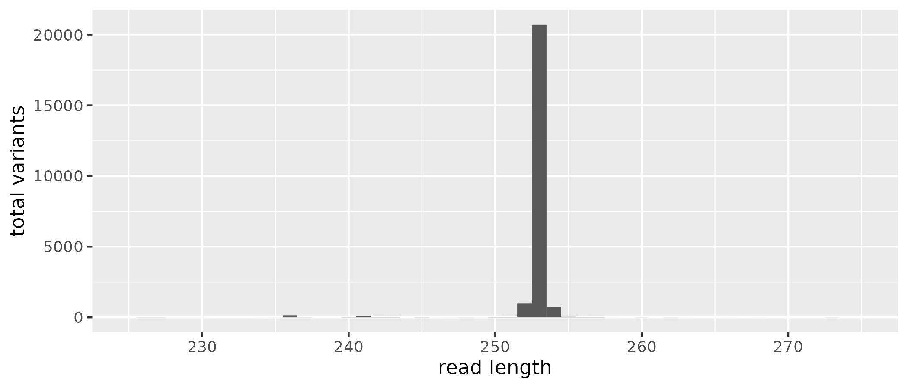
9. Tracking Reads
If you are interested how reads changed up to this point in the pipeline please see the Dada2 Data Portal page for more details.
And save the sequence table to an RDS file.
saveRDS(BCS_35, "BCS_35.rds")Merged Runs Workflow
Now it is time to combine the sequence tables from each run together into one merged sequences table.
We start by reading in each sequence table.
Click here to access the source code for the Merge Runs section of the workflow.
| Step | Command | What we’re doing |
|---|---|---|
| 10 | mergeSequenceTables() |
merge seqtabs from all runs. |
| 11 | removeBimeraDenovo() |
screen for & remove chimeras |
| 12 | track reads through workflow | |
| 13 | assignTaxonomy() |
assign taxonomy & finish workflow |
flowchart LR
D(BCS_26<br/>BCS_28<br/>BCS_29<br/>BCS_30<br/>BCS_34<br/>BCS_35<br/>) --> M
D --> M
D --> M
D --> M
D --> M
D --> M
M(mergeSequenceTables) --> N(removeBimeraDenovo)
N --> O(assignTaxonomy)
1. Merge Sequencing Tables
seqtab.merge <- mergeSequenceTables(BCS_26, BCS_28, BCS_29,
BCS_30, BCS_34, BCS_35)
dim(seqtab.merge)[1] 1909 96680So our count is 96680 ASVs across 1909 samples.
220 221 222 223 224 225 226 227 228 229 230 231 232
124 67 14 36 20 13 10 25 8 6 4 30 2
234 235 236 237 238 239 240 241 242 243 244 245 246
9 8 1371 151 41 6 96 401 291 443 31 14 13
247 248 249 250 251 252 253 254 255 256 257 258 259
26 23 19 48 159 3606 83887 3756 315 121 95 20 10
260 261 262 263 264 265 266 267 268 269 270 271 272
8 16 9 4 2 1 1 1 4 2 9 8 4
273 274 275 276 277 278 279 280 281 282 284 285 286
7 3 2 5 1 7 4 1 1 2 1 4 4
288 289 290 291 292 293 294 295 296 297 298 300 303
1 3 1 2 4 8 7 2 3 2 2 2 3
304 305 307 308 309 310 311 312 313 315 316 317 318
1 5 2 3 2 1 3 1 3 1 4 1 3
319 320 321 322 323 324 325 326 328 329 330 332 333
3 1 2 3 2 1 3 1 3 3 2 1 3
334 335 336 337 338 339 340 341 342 343 344 345 346
13 6 7 17 5 25 16 70 51 8 7 8 4
347 348 349 350 351 352 353 354 355 356 357 358 359
28 17 21 10 2 11 1 1 7 6 31 6 15
360 361 362 363 364 365 366 367 368 369 370 371 372
21 161 186 43 135 107 19 9 26 5 3 3 8
373 374 376 377 378 379 380 384 385 386 387 388
11 2 3 5 2 3 1 1 1 1 2 1 read_length_all <- data.frame(nchar(getSequences(seqtab.merge)))
colnames(read_length_all) <- "length"
plot_all <- qplot(length, data = read_length_all, geom = "histogram",
binwidth = 1, xlab = "read length",
ylab = "total variants", xlim = c(200,400)) 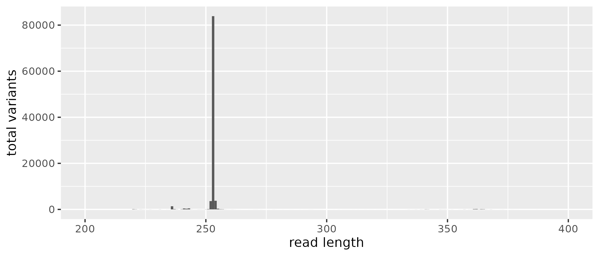
Then we remove length variants.
[1] 1909 91249And now our count is 91249 ASVs across 1909 samples.
252 253 254
3606 83887 3756 2. Remove Chimeras
Even though the dada method corrects substitution and indel errors, chimeric sequences remain. According to the DADA2 documentation, the accuracy of sequence variants after denoising makes identifying chimeric ASVs simpler than when dealing with fuzzy OTUs. Chimeric sequences are identified if they can be exactly reconstructed by combining a left-segment and a right-segment from two more abundant parent sequences.
seqtab.trim.nochim.consensus <-
removeBimeraDenovo(seqtab.trim,
method = "consensus",
multithread = 20,
verbose = TRUE)
dim(seqtab.trim.nochim.consensus)Identified 18398 bimeras out of 91249 input sequences.[1] 1909 72851[1] 0.9669996Chimera checking removed an additional 18398 sequence variants however, when we account for the abundances of each variant, we see chimeras accounts for about 3.30004% of the merged sequence reads. Not bad.
3. Track Reads through Workflow
At this point we can look at the number of reads that made it through each step of the workflow for every sample.
4. Assign Taxonomy
The assignTaxonomy command implements the naive Bayesian classifier, so for reproducible results you need to set a random number seed (see issue #538). We did this at the beginning of the workflow. For taxonomic assignment, we are using the GSR database (Molano, Vega-Abellaneda, and Manichanh 2024). The developers of DADA2 maintain formatted versions of popular databases, however the GSR-DB has not been formatted by the developers yet.
Click the link to can download an appropriate version of the GSR database.
To create a DADA2 formatted version GSR-DB1, we perform the following steps.
Download a data base
Here we are using the GSR V4 database.
wget https://manichanh.vhir.org/gsrdb/GSR-DB_V4_cluster-1.tar.gz
tar -xvzf GSR-DB_V4_cluster-1.tar.gzOnce you uncompress the tar file you should see four files, two .qza files (which you can ignore), a _taxa.txt file and a _seqs.fasta file. We are interested in the latter two files. These are the files we need to format for DADA2. How about we have a look at each file?
First the taxonomy file.
head GSR-DB_V4_cluster-1_taxa.txtFeature ID Taxon
AY999846 k__Bacteria; p__Actinobacteria; c__Actinomycetia; o__Actinomycetales-Streptomycetales-Unknown; f__Streptomycetaceae-Unknown; g__Streptomyces-Unknown; s__Unknown
JN885187.1.1362 k__Bacteria; p__Actinobacteria; c__Actinomycetia; o__Actinomycetales-Streptomycetales-Unknown; f__Streptomycetaceae-Unknown; g__Kitasatospora-Streptomyces-Unknown; s__UnknownAnd next the fasta file.
head GSR-DB_V4_cluster-1_seqs.fasta>AY999846
TACGTAGGGCGCAAGCGTTGTCCGGAATTATTGGGCGTAAAGAGCTCGTAGGCGGCTTGT
CACGTCGGTTGTGAAAGCCCGGGGCTTAACCCCGGGTCTGCAGTCGATACGGGCAGGCTA
GAGTTCGGTAGGGGAGATCGGAATTCCTGGTGTAGCGGTGAAATGCGCAGATATCAGGAG
GAACACCGGTGGCGAAGGCGGATCTCTGGGCCGATACTGACGCTGAGGAGCGAAAGCGTG
GGGAGCGAACAGG
>JN885187.1.1362
TACGTAGGGCGCGAGCGTTGTCCGGAATTATTGGGCGTAAAGAGCTCGTAGGCGGCTTGT
CACGTCGGTTGTGAAAGCCCGGGGCTTAACCCCGGGTCTGCAGTCGATACGGGCAGGCTA
GAGTTCGGTAGGGGAGATCGGAATTCCTGGTGTAGCGGTGAAATGCGCAGATATCAGGAGDADA2 requires a very specific format for classification. For the next few step we use a tool called SeqKit (Shen, Sipos, and Zhao 2024) for fasta defline manipulation.
This first step replaces the original fasta defline with the correspoding lineage information.
conda activate seqkit
seqkit replace -w 0 -p "(.+)" -r '{kv}' -k GSR-DB_V4_cluster-1_taxa.txt GSR-DB_V4_cluster-1_seqs.fasta > tmp_1.fa[INFO] read key-value file: GSR-DB_V4_cluster-1_taxa.txt
[INFO] 38802 pairs of key-value loadedHere is what the first few entries look like.
>k__Bacteria; p__Actinobacteria; c__Actinomycetia; o__Actinomycetales-Streptomycetales-Unknown; f__Streptomycetaceae-Unknown; g__Streptomyces-Unknown; s__Unknown
TACGTAGGGCGCAAGCGTTGTCCGGAATTATTGGGCGTAAAGAGCTCGTAGGCGGCTTGTCACGTCGGTTGTGAAAGCCCGGGGCTTAACCCCGGGTCTGCAGTCGATACGGGCAGGCTAGAGTTCGGTAGGGGAGATCGGAATTCCTGGTGTAGCGGTGAAATGCGCAGATATCAGGAGGAACACCGGTGGCGAAGGCGGATCTCTGGGCCGATACTGACGCTGAGGAGCGAAAGCGTGGGGAGCGAACAGG
>k__Bacteria; p__Actinobacteria; c__Actinomycetia; o__Actinomycetales-Streptomycetales-Unknown; f__Streptomycetaceae-Unknown; g__Kitasatospora-Streptomyces-Unknown; s__Unknown
TACGTAGGGCGCGAGCGTTGTCCGGAATTATTGGGCGTAAAGAGCTCGTAGGCGGCTTGTCACGTCGGTTGTGAAAGCCCGGGGCTTAACCCCGGGTCTGCAGTCGATACGGGCAGGCTAGAGTTCGGTAGGGGAGATCGGAATTCCTGGTGTAGCGGTGAAATGCGCAGATATCAGGAGGAACACCGGTGGCGAAGGCGGATCTCTGGGCCGATACTGACGCTGAGGAGCGAAAGCGTGGGGAGCGAACAGGATTAGATACCCTGGTAGTCCACGCCGTAAACGGTGGGCACTAGGTGTAGGNext we tidy up the deflines to remove spaces and leading taxonomic rank designations.
seqkit replace -w 0 -p " s__.*" -r '' tmp_1.fa > tmp_2.fa
seqkit replace -w 0 -p "\s" -r '' tmp_2.fa > tmp_3.fa
seqkit replace -w 0 -p "\w__" -r '' tmp_3.fa > gsrdb_dada2.fa
rm tmp_*And here are the first few lines of the final formatted GSR-DB fasta file.
>Bacteria;Actinobacteria;Actinomycetia;Actinomycetales-Streptomycetales-Unknown;Streptomycetaceae-Unknown;Streptomyces-Unknown;
TACGTAGGGCGCAAGCGTTGTCCGGAATTATTGGGCGTAAAGAGCTCGTAGGCGGCTTGTCACGTCGGTTGTGAAAGCCCGGGGCTTAACCCCGGGTCTGCAGTCGATACGGGCAGGCTAGAGTTCGGTAGGGGAGATCGGAATTCCTGGTGTAGCGGTGAAATGCGCAGATATCAGGAGGAACACCGGTGGCGAAGGCGGATCTCTGGGCCGATACTGACGCTGAGGAGCGAAAGCGTGGGGAGCGAACAGG
>Bacteria;Actinobacteria;Actinomycetia;Actinomycetales-Streptomycetales-Unknown;Streptomycetaceae-Unknown;Kitasatospora-Streptomyces-Unknown;
TACGTAGGGCGCGAGCGTTGTCCGGAATTATTGGGCGTAAAGAGCTCGTAGGCGGCTTGTCACGTCGGTTGTGAAAGCCCGGGGCTTAACCCCGGGTCTGCAGTCGATACGGGCAGGCTAGAGTTCGGTAGGGGAGATCGGAATTCCTGGTGTAGCGGTGAAATGCGCAGATATCAGGAGGAACACCGGTGGCGAAGGCGGATCTCTGGGCCGATACTGACGCTGAGGAGCGAAAGCGTGGGGAGCGAACAGGATTAGATACCCTGGTAGTCCACGCCGTAAACGGTGGGCACTAGGTGTAGGNow we can run the classification step.
seqtab.consensus <- seqtab.trim.nochim.consensus
tax_gsrdb.consensus <-
assignTaxonomy(seqtab.consensus,
"TAXONOMY_FILES/gsrdb_dada2.fa",
multithread = TRUE,
verbose = TRUE)
saveRDS(tax_gsrdb.consensus, "4.tax_gsrdb.consensus.rds")R Session Information & Code
This workflow was run on the Smithsonian High Performance Cluster (SI/HPC), Smithsonian Institution. Below are the specific packages and versions used in this workflow using both sessionInfo() and devtools::session_info(). Click the arrow to see the details.
Expand to see R Session Info
sessionInfo()
R version 4.3.2 (2023-10-31)
Platform: x86_64-conda-linux-gnu (64-bit)
Running under: Rocky Linux 8.9 (Green Obsidian)
Matrix products: default
BLAS/LAPACK: /home/scottjj/miniconda3/envs/R/lib/libopenblasp-r0.3.25.so; LAPACK version 3.11.0
locale:
[1] C
time zone: America/New_York
tzcode source: system (glibc)
attached base packages:
[1] parallel stats4 grid stats graphics grDevices utils
[8] datasets methods base
other attached packages:
[1] DECIPHER_2.30.0 RSQLite_2.3.4
[3] ShortRead_1.60.0 GenomicAlignments_1.38.0
[5] SummarizedExperiment_1.32.0 Biobase_2.62.0
[7] MatrixGenerics_1.14.0 matrixStats_1.2.0
[9] Rsamtools_2.18.0 GenomicRanges_1.54.1
[11] Biostrings_2.70.1 GenomeInfoDb_1.38.2
[13] XVector_0.42.0 IRanges_2.36.0
[15] S4Vectors_0.40.2 BiocParallel_1.36.0
[17] BiocGenerics_0.48.1 decontam_1.22.0
[19] dplyr_1.1.4 gridExtra_2.3
[21] phyloseq_1.46.0 ff_4.0.9
[23] bit_4.0.5 ggplot2_3.4.4
[25] dada2_1.30.0 Rcpp_1.0.11
loaded via a namespace (and not attached):
[1] DBI_1.2.0 bitops_1.0-7 deldir_2.0-2
[4] permute_0.9-7 rlang_1.1.2 magrittr_2.0.3
[7] ade4_1.7-22 compiler_4.3.2 mgcv_1.9-1
[10] systemfonts_1.0.5 png_0.1-8 vctrs_0.6.5
[13] reshape2_1.4.4 stringr_1.5.1 pkgconfig_2.0.3
[16] crayon_1.5.2 fastmap_1.1.1 labeling_0.4.3
[19] utf8_1.2.4 ragg_1.2.7 zlibbioc_1.48.0
[22] cachem_1.0.8 jsonlite_1.8.8 biomformat_1.30.0
[25] blob_1.2.4 rhdf5filters_1.14.1 DelayedArray_0.28.0
[28] Rhdf5lib_1.24.1 jpeg_0.1-10 cluster_2.1.6
[31] R6_2.5.1 stringi_1.8.3 RColorBrewer_1.1-3
[34] iterators_1.0.14 Matrix_1.6-4 splines_4.3.2
[37] igraph_1.6.0 tidyselect_1.2.0 abind_1.4-5
[40] vegan_2.6-4 codetools_0.2-19 hwriter_1.3.2.1
[43] lattice_0.22-5 tibble_3.2.1 plyr_1.8.9
[46] withr_2.5.2 survival_3.5-7 RcppParallel_5.1.7
[49] pillar_1.9.0 foreach_1.5.2 generics_0.1.3
[52] RCurl_1.98-1.13 munsell_0.5.0 scales_1.3.0
[55] glue_1.6.2 tools_4.3.2 interp_1.1-5
[58] data.table_1.14.10 rhdf5_2.46.1 ape_5.7-1
[61] latticeExtra_0.6-30 colorspace_2.1-0 nlme_3.1-164
[64] GenomeInfoDbData_1.2.11 cli_3.6.2 textshaping_0.3.7
[67] fansi_1.0.6 S4Arrays_1.2.0 gtable_0.3.4
[70] digest_0.6.33 SparseArray_1.2.2 farver_2.1.1
[73] memoise_2.0.1 multtest_2.58.0 lifecycle_1.0.4
[76] bit64_4.0.5 MASS_7.3-60
devtools::session_info()
- Session info ---------------------------------------------------------------
setting value
version R version 4.3.2 (2023-10-31)
os Rocky Linux 8.9 (Green Obsidian)
system x86_64, linux-gnu
ui X11
language (EN)
collate C
ctype C
tz America/New_York
date 2024-08-15
pandoc 3.1.3 @ /home/scottjj/miniconda3/envs/R/bin/pandoc
- Packages -------------------------------------------------------------------
package * version date (UTC) lib source
abind 1.4-5 2016-07-21 [1] CRAN (R 4.3.2)
ade4 1.7-22 2023-02-06 [1] CRAN (R 4.3.2)
ape 5.7-1 2023-03-13 [1] CRAN (R 4.3.2)
Biobase * 2.62.0 2023-10-24 [1] Bioconductor
BiocGenerics * 0.48.1 2023-11-01 [1] Bioconductor
BiocParallel * 1.36.0 2023-10-24 [1] Bioconductor
biomformat 1.30.0 2023-10-24 [1] Bioconductor
Biostrings * 2.70.1 2023-10-25 [1] Bioconductor
bit * 4.0.5 2022-11-15 [1] CRAN (R 4.3.0)
bit64 4.0.5 2020-08-30 [1] CRAN (R 4.3.0)
bitops 1.0-7 2021-04-24 [1] CRAN (R 4.3.2)
blob 1.2.4 2023-03-17 [1] CRAN (R 4.3.0)
cachem 1.0.8 2023-05-01 [1] CRAN (R 4.3.0)
cli 3.6.2 2023-12-11 [1] CRAN (R 4.3.2)
cluster 2.1.6 2023-12-01 [1] CRAN (R 4.3.2)
codetools 0.2-19 2023-02-01 [1] CRAN (R 4.3.0)
colorspace 2.1-0 2023-01-23 [1] CRAN (R 4.3.0)
crayon 1.5.2 2022-09-29 [1] CRAN (R 4.3.0)
dada2 * 1.30.0 2023-10-24 [1] Bioconductor
data.table 1.14.10 2023-12-08 [1] CRAN (R 4.3.2)
DBI 1.2.0 2023-12-21 [1] CRAN (R 4.3.2)
DECIPHER * 2.30.0 2023-10-24 [1] Bioconductor
decontam * 1.22.0 2023-10-24 [1] Bioconductor
DelayedArray 0.28.0 2023-10-24 [1] Bioconductor
deldir 2.0-2 2023-11-23 [1] CRAN (R 4.3.2)
devtools 2.4.5 2022-10-11 [1] CRAN (R 4.3.2)
digest 0.6.33 2023-07-07 [1] CRAN (R 4.3.0)
dplyr * 1.1.4 2023-11-17 [1] CRAN (R 4.3.2)
ellipsis 0.3.2 2021-04-29 [1] CRAN (R 4.3.0)
fansi 1.0.6 2023-12-08 [1] CRAN (R 4.3.2)
farver 2.1.1 2022-07-06 [1] CRAN (R 4.3.0)
fastmap 1.1.1 2023-02-24 [1] CRAN (R 4.3.0)
ff * 4.0.9 2023-01-25 [1] CRAN (R 4.3.2)
foreach 1.5.2 2022-02-02 [1] CRAN (R 4.3.0)
fs 1.6.3 2023-07-20 [1] CRAN (R 4.3.1)
generics 0.1.3 2022-07-05 [1] CRAN (R 4.3.0)
GenomeInfoDb * 1.38.2 2023-12-13 [1] Bioconductor 3.18 (R 4.3.2)
GenomeInfoDbData 1.2.11 2023-12-26 [1] Bioconductor
GenomicAlignments * 1.38.0 2023-10-24 [1] Bioconductor
GenomicRanges * 1.54.1 2023-10-29 [1] Bioconductor
ggplot2 * 3.4.4 2023-10-12 [1] CRAN (R 4.3.1)
glue 1.6.2 2022-02-24 [1] CRAN (R 4.3.0)
gridExtra * 2.3 2017-09-09 [1] CRAN (R 4.3.2)
gtable 0.3.4 2023-08-21 [1] CRAN (R 4.3.1)
htmltools 0.5.7 2023-11-03 [1] CRAN (R 4.3.2)
htmlwidgets 1.6.4 2023-12-06 [1] CRAN (R 4.3.2)
httpuv 1.6.13 2023-12-06 [1] CRAN (R 4.3.2)
hwriter 1.3.2.1 2022-04-08 [1] CRAN (R 4.3.2)
igraph 1.6.0 2023-12-11 [1] CRAN (R 4.3.2)
interp 1.1-5 2023-11-27 [1] CRAN (R 4.3.2)
IRanges * 2.36.0 2023-10-24 [1] Bioconductor
iterators 1.0.14 2022-02-05 [1] CRAN (R 4.3.0)
jpeg 0.1-10 2022-11-29 [1] CRAN (R 4.3.2)
jsonlite 1.8.8 2023-12-04 [1] CRAN (R 4.3.2)
labeling 0.4.3 2023-08-29 [1] CRAN (R 4.3.1)
later 1.3.2 2023-12-06 [1] CRAN (R 4.3.2)
lattice 0.22-5 2023-10-24 [1] CRAN (R 4.3.1)
latticeExtra 0.6-30 2022-07-04 [1] CRAN (R 4.3.2)
lifecycle 1.0.4 2023-11-07 [1] CRAN (R 4.3.2)
magrittr 2.0.3 2022-03-30 [1] CRAN (R 4.3.0)
MASS 7.3-60 2023-05-04 [1] CRAN (R 4.3.0)
Matrix 1.6-4 2023-11-30 [1] CRAN (R 4.3.2)
MatrixGenerics * 1.14.0 2023-10-24 [1] Bioconductor
matrixStats * 1.2.0 2023-12-11 [1] CRAN (R 4.3.2)
memoise 2.0.1 2021-11-26 [1] CRAN (R 4.3.0)
mgcv 1.9-1 2023-12-21 [1] CRAN (R 4.3.2)
mime 0.12 2021-09-28 [1] CRAN (R 4.3.0)
miniUI 0.1.1.1 2018-05-18 [1] CRAN (R 4.3.2)
multtest 2.58.0 2023-10-24 [1] Bioconductor
munsell 0.5.0 2018-06-12 [1] CRAN (R 4.3.0)
nlme 3.1-164 2023-11-27 [1] CRAN (R 4.3.2)
permute 0.9-7 2022-01-27 [1] CRAN (R 4.3.2)
phyloseq * 1.46.0 2023-10-24 [1] Bioconductor
pillar 1.9.0 2023-03-22 [1] CRAN (R 4.3.0)
pkgbuild 1.4.3 2023-12-10 [1] CRAN (R 4.3.2)
pkgconfig 2.0.3 2019-09-22 [1] CRAN (R 4.3.0)
pkgload 1.3.3 2023-09-22 [1] CRAN (R 4.3.2)
plyr 1.8.9 2023-10-02 [1] CRAN (R 4.3.1)
png 0.1-8 2022-11-29 [1] CRAN (R 4.3.2)
profvis 0.3.8 2023-05-02 [1] CRAN (R 4.3.2)
promises 1.2.1 2023-08-10 [1] CRAN (R 4.3.1)
purrr 1.0.2 2023-08-10 [1] CRAN (R 4.3.1)
R6 2.5.1 2021-08-19 [1] CRAN (R 4.3.0)
ragg 1.2.7 2023-12-11 [1] CRAN (R 4.3.2)
RColorBrewer 1.1-3 2022-04-03 [1] CRAN (R 4.3.0)
Rcpp * 1.0.11 2023-07-06 [1] CRAN (R 4.3.0)
RcppParallel 5.1.7 2023-02-27 [1] CRAN (R 4.3.2)
RCurl 1.98-1.13 2023-11-02 [1] CRAN (R 4.3.2)
remotes 2.4.2.1 2023-07-18 [1] CRAN (R 4.3.2)
reshape2 1.4.4 2020-04-09 [1] CRAN (R 4.3.0)
rhdf5 2.46.1 2023-11-29 [1] Bioconductor 3.18 (R 4.3.2)
rhdf5filters 1.14.1 2023-11-06 [1] Bioconductor
Rhdf5lib 1.24.1 2023-12-11 [1] Bioconductor 3.18 (R 4.3.2)
rlang 1.1.2 2023-11-04 [1] CRAN (R 4.3.2)
Rsamtools * 2.18.0 2023-10-24 [1] Bioconductor
RSQLite * 2.3.4 2023-12-08 [1] CRAN (R 4.3.2)
S4Arrays 1.2.0 2023-10-24 [1] Bioconductor
S4Vectors * 0.40.2 2023-11-23 [1] Bioconductor 3.18 (R 4.3.2)
scales 1.3.0 2023-11-28 [1] CRAN (R 4.3.2)
sessioninfo 1.2.2 2021-12-06 [1] CRAN (R 4.3.2)
shiny 1.8.0 2023-11-17 [1] CRAN (R 4.3.2)
ShortRead * 1.60.0 2023-10-24 [1] Bioconductor
SparseArray 1.2.2 2023-11-07 [1] Bioconductor
stringi 1.8.3 2023-12-11 [1] CRAN (R 4.3.2)
stringr 1.5.1 2023-11-14 [1] CRAN (R 4.3.2)
SummarizedExperiment * 1.32.0 2023-10-24 [1] Bioconductor
survival 3.5-7 2023-08-14 [1] CRAN (R 4.3.1)
systemfonts 1.0.5 2023-10-09 [1] CRAN (R 4.3.1)
textshaping 0.3.7 2023-10-09 [1] CRAN (R 4.3.1)
tibble 3.2.1 2023-03-20 [1] CRAN (R 4.3.0)
tidyselect 1.2.0 2022-10-10 [1] CRAN (R 4.3.0)
urlchecker 1.0.1 2021-11-30 [1] CRAN (R 4.3.2)
usethis 2.2.2 2023-07-06 [1] CRAN (R 4.3.0)
utf8 1.2.4 2023-10-22 [1] CRAN (R 4.3.1)
vctrs 0.6.5 2023-12-01 [1] CRAN (R 4.3.2)
vegan 2.6-4 2022-10-11 [1] CRAN (R 4.3.2)
withr 2.5.2 2023-10-30 [1] CRAN (R 4.3.1)
xtable 1.8-4 2019-04-21 [1] CRAN (R 4.3.0)
XVector * 0.42.0 2023-10-24 [1] Bioconductor
zlibbioc 1.48.0 2023-10-24 [1] BioconductorData Set Prep
In this next part of the workflow our main goal is to create a microtable object using the R package microeco (Liu et al. 2021). The microtable will be used to store the ASV by sample data as well the taxonomic, fasta, and sample data in a single object. More on that in a moment.
We will also:
- Remove any ASVs without kingdom level classification.
- Revome any contaminants (chloroplast, mitochondria, etc.).
- Remove Negative Control (NC) samples.
- Remove any low-count samples.
Read Counts Assessment
Before we begin, let’s create a summary table containing some basic sample metadata and the read count data from the Sample Data section of the workflow. We want to inspect how total reads changed through the workflow. Table headers are as follows:
| Header | Description |
|---|---|
Sample ID |
New sample ID based on Ocean, species, tissue, & unique ID |
input rc |
No. of raw reads |
final rc |
Final read count after removing chimeras |
per reads retain |
Percent of reads remaining from input to final rc
|
total ASVs |
No. of ASVs |
Ocean |
Sampling ocean |
Morphospecies |
Host shrimp species |
Tissue |
Shrimp tissue type |
Habitat |
Sampling habitat |
Site |
Sampling site |
Taxon |
Shrimp, environmental samples, Controls |
Species_Pair |
ASK MATT |
Species_group |
ASK MATT |
Species_complex |
ASK MATT |
Run |
Sequencing Run |
Plate |
Plate name |
Prep Data for microeco
Like any tool, the microeco package needs the data in a specific form. I formatted our data to match the mock data in the microeco tutorial, specifically this section.
A. Taxonomy Table
Here is what the taxonomy table looks like in the mock data.
---------------------------------------------------------------------
Kingdom Phylum Class
---------- ------------- -------------------- -----------------------
OTU_50 k__Bacteria p__Proteobacteria c__Betaproteobacteria
OTU_8058 k__Bacteria p__Actinobacteria c__Actinobacteria
OTU_7152 k__Bacteria p__Verrucomicrobia c__OPB35 soil group
---------------------------------------------------------------------And here is the taxonomy table from the dada2 workflow. The name dada2 gives to each ASV is the actual sequence of the ASV. We need to change this for downstream analyses.
--------------------------------------------------------------------------------------------------------------------------------------------------------------------------------------------------------------------------------------------------------------------------
Kingdom
--------------------------------------------------------------------------------------------------------------------------------------------------------------------------------------------------------------------------------------------------------------- ----------
TACGGAGGGTGCAAGCGTTAATCGGAATTACTGGGCGTAAAGCGCTCGTAGGCGGCACGCTAAGTCGGATGTGAAATCCCAGGGCTTAACCTTGGAACTGCATTCGATACTGGCGAGCTAGAGTGTGTGAGAGGGTAGTGGAATTCCAGGTGTAGCGGTGAAATGCGTAGATATCTGGAGGAACATCAGTGGCGAAGGCGACTACCTGGCACAACACTGACGCTGAGGAGCGAAAGCGTGGGGAGCAAACAGG Bacteria
TACGGAGGGTGCGAGCGTTAATCGGAATTACTGGGCGTAAAGCGCATGCAGGTGGTTTGTTAAGTCAGATGTGAAAGCCCGGGGCTCAACCTCGGAATAGCATTTGAAACTGGCAGACTAGAGTACTGTAGAGGGGGGTAGAATTTCAGGTGTAGCGGTGAAATGCGTAGAGATCTGAAGGAATACCGGTGGCGAAGGCGGCCCCCTGGACAGATACTGACACTCAGATGCGAAAGCGTGGGGAGCAAACAGG Bacteria
TACATAGGTGTCAAGCGTTATCCGGATTTATTGGGCGTAAAGAGTGCGCAGATGGTTTAATAAGTTTGGGGTTAAATGCTAAAGCTTAACTTTAGTATGCCTTGAAAACTGTTTTACTAGAGTGTGGTAGAAGTTGATGGAATTTCATGTGTAGCGGTGGAATGCGTAGATATATGAAGGAACACCAATGGCGAAGGCAATCAACTATGCCATTACTGACATTCATGCACGAAAGCGTGGGGAGCGAATAGG Bacteria
--------------------------------------------------------------------------------------------------------------------------------------------------------------------------------------------------------------------------------------------------------------------------
Table: Table continues below
--------------------------------------------------------------------------------------------------------------------------------------------------------------------------------------------------------------------------------------------------------------------------------
Phylum
--------------------------------------------------------------------------------------------------------------------------------------------------------------------------------------------------------------------------------------------------------------- ----------------
TACGGAGGGTGCAAGCGTTAATCGGAATTACTGGGCGTAAAGCGCTCGTAGGCGGCACGCTAAGTCGGATGTGAAATCCCAGGGCTTAACCTTGGAACTGCATTCGATACTGGCGAGCTAGAGTGTGTGAGAGGGTAGTGGAATTCCAGGTGTAGCGGTGAAATGCGTAGATATCTGGAGGAACATCAGTGGCGAAGGCGACTACCTGGCACAACACTGACGCTGAGGAGCGAAAGCGTGGGGAGCAAACAGG Proteobacteria
TACGGAGGGTGCGAGCGTTAATCGGAATTACTGGGCGTAAAGCGCATGCAGGTGGTTTGTTAAGTCAGATGTGAAAGCCCGGGGCTCAACCTCGGAATAGCATTTGAAACTGGCAGACTAGAGTACTGTAGAGGGGGGTAGAATTTCAGGTGTAGCGGTGAAATGCGTAGAGATCTGAAGGAATACCGGTGGCGAAGGCGGCCCCCTGGACAGATACTGACACTCAGATGCGAAAGCGTGGGGAGCAAACAGG Proteobacteria
TACATAGGTGTCAAGCGTTATCCGGATTTATTGGGCGTAAAGAGTGCGCAGATGGTTTAATAAGTTTGGGGTTAAATGCTAAAGCTTAACTTTAGTATGCCTTGAAAACTGTTTTACTAGAGTGTGGTAGAAGTTGATGGAATTTCATGTGTAGCGGTGGAATGCGTAGATATATGAAGGAACACCAATGGCGAAGGCAATCAACTATGCCATTACTGACATTCATGCACGAAAGCGTGGGGAGCGAATAGG NA
--------------------------------------------------------------------------------------------------------------------------------------------------------------------------------------------------------------------------------------------------------------------------------
Table: Table continues below
-------------------------------------------------------------------------------------------------------------------------------------------------------------------------------------------------------------------------------------------------------------------------------------
Class
--------------------------------------------------------------------------------------------------------------------------------------------------------------------------------------------------------------------------------------------------------------- ---------------------
TACGGAGGGTGCAAGCGTTAATCGGAATTACTGGGCGTAAAGCGCTCGTAGGCGGCACGCTAAGTCGGATGTGAAATCCCAGGGCTTAACCTTGGAACTGCATTCGATACTGGCGAGCTAGAGTGTGTGAGAGGGTAGTGGAATTCCAGGTGTAGCGGTGAAATGCGTAGATATCTGGAGGAACATCAGTGGCGAAGGCGACTACCTGGCACAACACTGACGCTGAGGAGCGAAAGCGTGGGGAGCAAACAGG Gammaproteobacteria
TACGGAGGGTGCGAGCGTTAATCGGAATTACTGGGCGTAAAGCGCATGCAGGTGGTTTGTTAAGTCAGATGTGAAAGCCCGGGGCTCAACCTCGGAATAGCATTTGAAACTGGCAGACTAGAGTACTGTAGAGGGGGGTAGAATTTCAGGTGTAGCGGTGAAATGCGTAGAGATCTGAAGGAATACCGGTGGCGAAGGCGGCCCCCTGGACAGATACTGACACTCAGATGCGAAAGCGTGGGGAGCAAACAGG Gammaproteobacteria
TACATAGGTGTCAAGCGTTATCCGGATTTATTGGGCGTAAAGAGTGCGCAGATGGTTTAATAAGTTTGGGGTTAAATGCTAAAGCTTAACTTTAGTATGCCTTGAAAACTGTTTTACTAGAGTGTGGTAGAAGTTGATGGAATTTCATGTGTAGCGGTGGAATGCGTAGATATATGAAGGAACACCAATGGCGAAGGCAATCAACTATGCCATTACTGACATTCATGCACGAAAGCGTGGGGAGCGAATAGG NA
-------------------------------------------------------------------------------------------------------------------------------------------------------------------------------------------------------------------------------------------------------------------------------------The first step is to rename the amplicon sequence variants so the designations are a bit more user friendly. By default, DADA2 names each ASV by its unique sequence so that data can be directly compared across studies (which is great). But this convention can get cumbersome downstream, so we rename the ASVs using a simpler convention—ASV1, ASV2, ASV3, and so on.
tmp_tax <- data.frame(tax_gsrdb)
# adding unique ASV names
row.names(tmp_tax) <- paste0("ASV", seq(nrow(tmp_tax)))And this is how the taxonomy table looks after assigning new names.
----------------------------------------------------------
Kingdom Phylum Class
-------- ---------- ---------------- ---------------------
ASV1 Bacteria Proteobacteria Gammaproteobacteria
ASV2 Bacteria Proteobacteria Gammaproteobacteria
ASV3 Bacteria NA NA
----------------------------------------------------------Next we need to add rank definitions to each classification.
And then this. Exactly like the mock data.
-------------------------------------------------------------------
Kingdom Phylum Class
-------- ------------- ------------------- ------------------------
ASV1 k__Bacteria p__Proteobacteria c__Gammaproteobacteria
ASV2 k__Bacteria p__Proteobacteria c__Gammaproteobacteria
ASV3 k__Bacteria p__ c__
-------------------------------------------------------------------B. Sequence Table
Here is what the sequence table looks like in the mock data.
--------------------------------------------------------------------
S1 S2 S3 S4 S5 S6 S7 S9 S10 S11 S12
---------- ---- ---- ---- ---- ---- ---- ---- ---- ----- ----- -----
OTU_4272 1 0 1 1 0 0 1 1 0 1 1
OTU_236 1 4 0 2 35 5 94 0 177 14 27
OTU_399 9 2 2 4 4 0 3 6 0 1 2
--------------------------------------------------------------------tmp_st <- data.frame(seqtab)
identical(colnames(tmp_st), row.names(tax_gsrdb))
names(tmp_st) <- row.names(tmp_tax)
tmp_st <- tmp_st %>% tibble::rownames_to_column()
tmp_st <- tmp_st %>%
tidyr::pivot_longer(cols = c(-1), names_to = "tmp") %>%
tidyr::pivot_wider(names_from = c(1))
tmp_st <- tibble::column_to_rownames(tmp_st, "tmp")And now the final, modified sequence table.
--------------------------------------------------------------------
EP_A_AREN_MG_8652 EP_A_AREN_MG_8654 EP_A_AREN_MG_8697
-------- ------------------- ------------------- -------------------
ASV1 7 0 0
ASV2 1113 1803 31
ASV3 0 0 0
--------------------------------------------------------------------C. Sample Table
Here is what the sample table looks like in the mock data.
pandoc.table(sample_info_16S[1:3,], emphasize.rownames = FALSE)
----------------------------------------------------
SampleID Group Type Saline
-------- ---------- ------- ------ -----------------
S1 S1 IW NE Non-saline soil
S2 S2 IW NE Non-saline soil
S3 S3 IW NE Non-saline soil
----------------------------------------------------samdf <- readRDS(here("share/ssu/sampledata/", "sample_data.rds"))
samdf <- samdf %>% tibble::column_to_rownames("SampleID")
samdf$SampleID <- rownames(samdf)
samdf <- samdf %>% relocate(SampleID)And now a partial view of the final, modified sample table.
-------------------------------------------------------------------------
SampleID OCEAN SPECIES TISSUE ID
------------------- ------------------- ------- --------- -------- ------
EP_A_AREN_EG_8651 EP_A_AREN_EG_8651 EP A_AREN EG 8651
EP_A_AREN_EG_8654 EP_A_AREN_EG_8654 EP A_AREN EG 8654
EP_A_AREN_EG_8698 EP_A_AREN_EG_8698 EP A_AREN EG 8698
-------------------------------------------------------------------------Experiment-level Objects
In the following section we create microtable and phyloseq objects. These are single, consolidated experiment-level data objects that organize various data types, such as OTU tables (taxa abundance), sample metadata, taxonomic classifications, as well as phylogenetic trees and reference sequences, into one structured format. This unified approach facilitates reproducible, interactive analysis and visualization by bringing all related information together.
We begin by creating the microtable and then use the function meco2phyloseq from the file2meco package to create the phyloseq object. This way all of the underlying data is identical across the two objects.
These objects contain an ASV table (taxa abundances), sample metadata, and taxonomy table (mapping between ASVs and higher-level taxonomic classifications).
sample_info <- samdf
tax_tab <- tmp_tax
otu_tab <- tmp_sttmp_me <- microtable$new(sample_table = sample_info,
otu_table = otu_tab,
tax_table = tax_tab)
tmp_memicrotable-class object:
sample_table have 1909 rows and 13 columns
otu_table have 72851 rows and 1909 columns
tax_table have 72851 rows and 6 columnsAdd Representative Sequence
We can also add representative sequences for each OTU/ASV. For this step, we can simply grab the sequences from the row names of the DADA2 taxonomy object loaded above.
tmp_seq <- data.frame(row.names(data.frame(tax_gsrdb)) )
tmp_names <- data.frame(row.names(tax_tab))
tmp_fa <- cbind(tmp_names, tmp_seq)
colnames(tmp_fa) <- c("ASV_ID", "ASV_SEQ")
tmp_fa$ASV_ID <- sub("^", ">", tmp_fa$ASV_ID)
write.table(tmp_fa, here(work_here, "rep_seq.fasta"),
sep = "\n", col.names = FALSE, row.names = FALSE,
quote = FALSE, fileEncoding = "UTF-8")
rep_fasta <- Biostrings::readDNAStringSet(here(work_here, "rep_seq.fasta"))
tmp_me$rep_fasta <- rep_fasta
tmp_me$tidy_dataset()Curate the Data Set
Pretty much the last thing to do is remove unwanted taxa, negative controls, and low-count samples.
Remove any Kingdom NAs
Here we can just use the straight up subset command since we do not need to worry about any ranks above Kingdom also being removed.
microtable-class object:
sample_table have 1909 rows and 14 columns
otu_table have 72827 rows and 1909 columns
tax_table have 72827 rows and 6 columns
rep_fasta have 72827 sequencesRemove Contaminants
Now we can remove any potential contaminants like mitochondria or chloroplasts.
Total 0 features are removed from tax_table ...microtable-class object:
sample_table have 1909 rows and 14 columns
otu_table have 72827 rows and 1909 columns
tax_table have 72827 rows and 6 columns
rep_fasta have 72827 sequencesRemove Negative Controls (NC)
Now we need to remove the NC samples and ASVs found in those sample. We first identified all ASVs that were present in at least one NC sample represented by at least 1 read. We did this by subsetting the NC samples from the new microtable object.
72231 taxa with 0 abundance are removed from the otu_table ...microtable-class object:
sample_table have 60 rows and 14 columns
otu_table have 596 rows and 60 columns
tax_table have 596 rows and 6 columns
rep_fasta have 596 sequencesLooks like there are 596 ASVs in the NC samples from a total of 205834 reads.
nc_asvs <- row.names(tmp_nc$tax_table) [1] "ASV1" "ASV2" "ASV4" "ASV5" "ASV6" "ASV7" "ASV10" "ASV11" "ASV13"
[10] "ASV14" "ASV15" "ASV16" "ASV17" "ASV18" "ASV20" "ASV22" "ASV23" "ASV26"
[19] "ASV28" "ASV31"There are 596 ASVs found in the NC sample. ASVs are numbered in order by total abundance in the data set so we know that many of the ASVs in the NC samples are not particularly abundant in the dataset. We can look at the abundance of these ASVs across all samples and compare it to the NC. This takes a bit of wrangling.
Essentially, for each ASV, the code below calculates:
- The total number of NC samples containing at least 1 read.
- The total number of reads in NC samples.
- The total number of non-NC samples containing at least 1 read.
- The total number of reads in non-NC samples.
- The percent of reads in the NC samples and the percent of NC samples containing reads.
tmp_rem_nc <- microeco::clone(tmp_no_cont)
tmp_rem_nc_df <- tmp_rem_nc$otu_table
tmp_rem_nc_df <- tmp_rem_nc_df %>%
dplyr::filter(row.names(tmp_rem_nc_df) %in% nc_asvs)
tmp_rem_nc_df <- tmp_rem_nc_df %>% tibble::rownames_to_column("ASV_ID")#-------provide a string unique to NC samples--------------#
nc_name <- "Control_"
#----------------------------------------------------------#
tmp_rem_nc_df <- tmp_rem_nc_df %>%
dplyr::mutate(total_reads_NC = rowSums(dplyr::select(., contains(nc_name))),
.after = "ASV_ID")
tmp_rem_nc_df <- dplyr::select(tmp_rem_nc_df, -contains(nc_name))
tmp_rem_nc_df <- tmp_rem_nc_df %>%
dplyr::mutate(total_reads_samps = rowSums(.[3:ncol(tmp_rem_nc_df)]),
.after = "total_reads_NC")
tmp_rem_nc_df[, 4:ncol(tmp_rem_nc_df)] <- list(NULL)
tmp_rem_nc_df <- tmp_rem_nc_df %>%
dplyr::mutate(perc_in_neg = 100*(
total_reads_NC / (total_reads_NC + total_reads_samps)),
.after = "total_reads_samps")tmp_rem_nc_df$perc_in_neg <- round(tmp_rem_nc_df$perc_in_neg, digits = 6)
tmp_1 <- data.frame(rowSums(tmp_rem_nc$otu_table != 0)) %>%
tibble::rownames_to_column("ASV_ID") %>%
dplyr::rename("total_samples" = 2)
tmp_2 <- dplyr::select(tmp_rem_nc$otu_table, contains(nc_name))
tmp_2$num_samp_nc <- rowSums(tmp_2 != 0)
tmp_2 <- dplyr::select(tmp_2, contains("num_samp_nc")) %>%
tibble::rownames_to_column("ASV_ID")
tmp_3 <- dplyr::select(tmp_rem_nc$otu_table, -contains(nc_name))
tmp_3$num_samp_no_nc <- rowSums(tmp_3 != 0)
tmp_3 <- dplyr::select(tmp_3, contains("num_samp_no_nc")) %>%
tibble::rownames_to_column("ASV_ID")
tmp_rem_nc_df <- dplyr::left_join(tmp_rem_nc_df, tmp_1) %>%
dplyr::left_join(., tmp_2) %>%
dplyr::left_join(., tmp_3)
tmp_rem_nc_df <- tmp_rem_nc_df %>%
dplyr::mutate(perc_in_neg_samp = 100*( num_samp_nc / (num_samp_nc + num_samp_no_nc)),
.after = "num_samp_no_nc")nc_check <- tmp_rem_nc_dfLooking at these data we can see that ASVs like ASV1, ASV2, and so on, are only represented by a really small number of NC reads and samples. On the other hand, ASVs such as ASV91, ASV121, and ASV299 are relatively abundant in NC samples. We decided to remove ASVs if:
- The number of reads found in NC samples accounted for more than 10% of total reads OR
- The percent of NC samples containing the ASV was greater than 10% of total samples.
nc_remove <- nc_check %>%
dplyr::filter(perc_in_neg > 10 | perc_in_neg_samp > 10)| Total ASVs | NC reads | non NC reads | % NC reads | |
|---|---|---|---|---|
| Removed | 371 | 170482 | 233876 | 42.161 |
| Retained | 225 | 35352 | 12394240 | 0.284 |
We identified a total of 596 ASVs that were present in at least 1 NC sample by at least 1 read. We removed any ASV where more than 10% of total reads were found in NC samples OR any ASV found in more than 10% of NC samples. Based on these criteria we removed 371 ASVs from the data set, which represented 170482 total reads in NC samples and 233876 total reads in non-NC samples. Of the total reads removed 42.161% came from NC samples. Of all ASVs identified in NC samples,225 were retained because the fell below the threshhold criteria. These ASVs accounted for 35352 reads in NC samples and 12394240 reads in non-NC samples. NC samples accounted for 0.284% of these reads.
OK, now we can remove the NC samples and any ASVs that met our criteria described above.
tmp_no_nc <- microeco::clone(tmp_no_cont)
tmp_rem_asv <- as.factor(nc_remove$ASV_ID)
tmp_no_nc$otu_table <- tmp_rem_nc$otu_table %>%
filter(!row.names(tmp_no_nc$otu_table) %in% tmp_rem_asv)
tmp_no_nc$tidy_dataset()
tmp_no_nc$sample_table <- subset(tmp_no_nc$sample_table,
TAXON != "Control_")
tmp_no_nc$tidy_dataset()
tmp_no_nc9 samples with 0 abundance are removed from the otu_table ...microtable-class object:
sample_table have 1900 rows and 14 columns
otu_table have 72456 rows and 1900 columns
tax_table have 72456 rows and 6 columns
rep_fasta have 72456 sequencesRemove Low-Count Samples
Next, we can remove samples with really low read counts—here we set the threshold to 1000 reads.
tmp_no_low <- microeco::clone(tmp_no_nc)
tmp_no_low$otu_table <- tmp_no_nc$otu_table %>%
dplyr::select(where(~ is.numeric(.) && sum(.) >= 1000))
tmp_no_low$tidy_dataset()
tmp_no_low26 taxa with 0 abundance are removed from the otu_table ...microtable-class object:
sample_table have 1848 rows and 14 columns
otu_table have 72430 rows and 1848 columns
tax_table have 72430 rows and 6 columns
rep_fasta have 72430 sequencesGiving us the final microtable object.
me_final <- microeco::clone(tmp_no_low)Lastly, we can use the package file2meco to generate a phyloseq object.
ps_final <- file2meco::meco2phyloseq(me_final)Summary
Now time to summarize the data. For this we use the R package miaverse (Borman et al. 2024).
| me_dataset | total_asvs | total_reads | total_samples |
|---|---|---|---|
| original | 72851 | 35764704 | 1909 |
| no NA kingdoms | 72827 | 35760968 | 1909 |
| no contaminants | 72827 | 35760968 | 1909 |
| no negative controls | 72456 | 35356610 | 1900 |
| no low count samps | 72430 | 35345679 | 1848 |
| final | 72430 | 35345679 | 1848 |
| Metric | Start | End |
|---|---|---|
| Min. no. of reads | 49 | 1202 |
| Max. no. of reads | 251022 | 249532 |
| Total no. of reads | 35764704 | 35345679 |
| Avg. no. of reads | 18735 | 19126 |
| Median no. of reads | 14827 | 15149.500 |
| Total ASVs | 72851 | 72430 |
| No. of singleton ASVs | 106 | 106 |
| % of singleton ASVs | 0.146 | 0.146 |
| Sparsity | 0.996 | 0.996 |
We started off with 72851 ASVs and 1909 samples. After curation of the dataset, there were 72430 ASVs and 1848 samples remaining.
We lost a total of 61 samples after curating the dataset. This includes 50 NC samples and 11 non-NC samples.
Here is a list of non-NC samples that were removed.
[1] "WA_A_BAHA_GL_7474" "WA_A_NUTT_EG_9410" "WA_A_WEBS_HP_9411"
[4] "WA_A_CRIS_GL_9624" "WA_A_CRIS_HP_7536" "WA_A_FLOR_GL_9659"
[7] "WA_A_PARA_GL_9474" "WA_A_PARA_MG_9364" "WA_A_PARA_ST_9477"
[10] "WA_A_PCNS_MG_9513" "WA_A_THOM_ST_9389"Download Results
Quick access to read changes through the pipeline and ASVs detected in negative control samples.
| File Name | Description |
|---|---|
| BCS_26_read_changes.txt | Pre merge read changes for sequencing run BCS_26 |
| BCS_28_read_changes.txt | Pre merge read changes for sequencing run BCS_28 |
| BCS_29_read_changes.txt | Pre merge read changes for sequencing run BCS_29 |
| BCS_30_read_changes.txt | Pre merge read changes for sequencing run BCS_30 |
| BCS_34_read_changes.txt | Pre merge read changes for sequencing run BCS_34 |
| BCS_35_read_changes.txt | Pre merge read changes for sequencing run BCS_35 |
| asv_in_nc_samples.txt | Abundance table of ASVs detected in Negative Control samples. |
| dada2_pipeline_read_changes.txt | Read changes for all samples through Dada2 pipeline |
Detailed Session Info
Expand to see Session Info
─ Session info ───────────────────────────────────────────────────────────────
setting value
version R version 4.5.1 (2025-06-13)
os macOS Ventura 13.7.8
system x86_64, darwin20
ui X11
language (EN)
collate en_US.UTF-8
ctype en_US.UTF-8
tz America/Los_Angeles
date 2025-10-03
pandoc 3.6.3 @ /Applications/RStudio.app/Contents/Resources/app/quarto/bin/tools/x86_64/ (via rmarkdown)
quarto 1.8.25 @ /Applications/quarto/bin/quarto
─ Packages ───────────────────────────────────────────────────────────────────
package * version date (UTC) lib source
Biobase * 2.68.0 2025-04-15 [1] Bioconductor 3.21 (R 4.5.0)
BiocGenerics * 0.54.0 2025-04-15 [1] Bioconductor 3.21 (R 4.5.0)
Biostrings * 2.76.0 2025-04-15 [1] Bioconductor 3.21 (R 4.5.0)
downloadthis * 0.5.0 2025-09-26 [1] Github (fmmattioni/downloadthis@18e3e5a)
dplyr * 1.1.4 2023-11-17 [1] CRAN (R 4.5.0)
fontawesome * 0.5.3 2024-11-16 [1] CRAN (R 4.5.0)
forcats * 1.0.0 2023-01-29 [1] CRAN (R 4.5.0)
fs * 1.6.6 2025-04-12 [1] CRAN (R 4.5.0)
generics * 0.1.4 2025-05-09 [1] CRAN (R 4.5.0)
GenomeInfoDb * 1.44.2 2025-08-18 [1] Bioconductor 3.21 (R 4.5.1)
GenomicRanges * 1.60.0 2025-04-15 [1] Bioconductor 3.21 (R 4.5.0)
ggplot2 * 4.0.0 2025-09-11 [1] CRAN (R 4.5.1)
here * 1.0.2 2025-09-15 [1] CRAN (R 4.5.1)
htmltools * 0.5.8.1 2024-04-04 [1] CRAN (R 4.5.0)
IRanges * 2.42.0 2025-04-15 [1] Bioconductor 3.21 (R 4.5.0)
lubridate * 1.9.4 2024-12-08 [1] CRAN (R 4.5.0)
magrittr * 2.0.4 2025-09-12 [1] CRAN (R 4.5.1)
MatrixGenerics * 1.20.0 2025-04-15 [1] Bioconductor 3.21 (R 4.5.0)
matrixStats * 1.5.0 2025-01-07 [1] CRAN (R 4.5.0)
mia * 1.15.6 2024-11-22 [1] Bioconductor 3.21 (R 4.5.0)
microbiome * 1.30.0 2025-04-15 [1] Bioconductor 3.21 (R 4.5.0)
microeco * 1.15.0 2025-05-18 [1] CRAN (R 4.5.0)
microViz * 0.12.7 2025-08-01 [1] https://david-barnett.r-universe.dev (R 4.5.1)
MultiAssayExperiment * 1.34.0 2025-04-15 [1] Bioconductor 3.21 (R 4.5.0)
pander * 0.6.6 2025-03-01 [1] CRAN (R 4.5.0)
phyloseq * 1.52.0 2025-04-15 [1] Bioconductor 3.21 (R 4.5.0)
purrr * 1.1.0 2025-07-10 [1] CRAN (R 4.5.1)
R.methodsS3 * 1.8.2 2022-06-13 [1] CRAN (R 4.5.0)
R.oo * 1.27.1 2025-05-02 [1] CRAN (R 4.5.0)
R.utils * 2.13.0 2025-02-24 [1] CRAN (R 4.5.0)
reactable * 0.4.4 2023-03-12 [1] CRAN (R 4.5.0)
reactablefmtr * 2.0.0 2022-03-16 [1] CRAN (R 4.5.0)
readr * 2.1.5 2024-01-10 [1] CRAN (R 4.5.0)
S4Vectors * 0.46.0 2025-04-15 [1] Bioconductor 3.21 (R 4.5.0)
seqinr * 4.2-36 2023-12-08 [1] CRAN (R 4.5.0)
sessioninfo * 1.2.3 2025-02-05 [1] CRAN (R 4.5.0)
SingleCellExperiment * 1.30.1 2025-05-05 [1] Bioconductor 3.21 (R 4.5.0)
stringr * 1.5.2 2025-09-08 [1] CRAN (R 4.5.1)
SummarizedExperiment * 1.38.1 2025-04-28 [1] Bioconductor 3.21 (R 4.5.0)
tibble * 3.3.0 2025-06-08 [1] CRAN (R 4.5.0)
tidyr * 1.3.1 2024-01-24 [1] CRAN (R 4.5.0)
tidyverse * 2.0.0 2023-02-22 [1] CRAN (R 4.5.0)
tinytable * 0.13.0.10 2025-09-07 [1] https://vincentarelbundock.r-universe.dev (R 4.5.1)
TreeSummarizedExperiment * 2.16.1 2025-05-08 [1] Bioconductor 3.21 (R 4.5.0)
XVector * 0.48.0 2025-04-15 [1] Bioconductor 3.21 (R 4.5.0)
zip * 2.3.3 2025-05-13 [1] CRAN (R 4.5.0)
[1] /Library/Frameworks/R.framework/Versions/4.5-x86_64/Resources/library
* ── Packages attached to the search path.
──────────────────────────────────────────────────────────────────────────────
====== Devtools Session info =================================== package * version date (UTC) lib source
Biobase * 2.68.0 2025-04-15 [1] Bioconductor 3.21 (R 4.5.0)
BiocGenerics * 0.54.0 2025-04-15 [1] Bioconductor 3.21 (R 4.5.0)
Biostrings * 2.76.0 2025-04-15 [1] Bioconductor 3.21 (R 4.5.0)
downloadthis * 0.5.0 2025-09-26 [1] Github (fmmattioni/downloadthis@18e3e5a)
dplyr * 1.1.4 2023-11-17 [1] CRAN (R 4.5.0)
fontawesome * 0.5.3 2024-11-16 [1] CRAN (R 4.5.0)
forcats * 1.0.0 2023-01-29 [1] CRAN (R 4.5.0)
fs * 1.6.6 2025-04-12 [1] CRAN (R 4.5.0)
generics * 0.1.4 2025-05-09 [1] CRAN (R 4.5.0)
GenomeInfoDb * 1.44.2 2025-08-18 [1] Bioconductor 3.21 (R 4.5.1)
GenomicRanges * 1.60.0 2025-04-15 [1] Bioconductor 3.21 (R 4.5.0)
ggplot2 * 4.0.0 2025-09-11 [1] CRAN (R 4.5.1)
here * 1.0.2 2025-09-15 [1] CRAN (R 4.5.1)
htmltools * 0.5.8.1 2024-04-04 [1] CRAN (R 4.5.0)
IRanges * 2.42.0 2025-04-15 [1] Bioconductor 3.21 (R 4.5.0)
lubridate * 1.9.4 2024-12-08 [1] CRAN (R 4.5.0)
magrittr * 2.0.4 2025-09-12 [1] CRAN (R 4.5.1)
MatrixGenerics * 1.20.0 2025-04-15 [1] Bioconductor 3.21 (R 4.5.0)
matrixStats * 1.5.0 2025-01-07 [1] CRAN (R 4.5.0)
mia * 1.15.6 2024-11-22 [1] Bioconductor 3.21 (R 4.5.0)
microbiome * 1.30.0 2025-04-15 [1] Bioconductor 3.21 (R 4.5.0)
microeco * 1.15.0 2025-05-18 [1] CRAN (R 4.5.0)
microViz * 0.12.7 2025-08-01 [1] https://david-barnett.r-universe.dev (R 4.5.1)
MultiAssayExperiment * 1.34.0 2025-04-15 [1] Bioconductor 3.21 (R 4.5.0)
pander * 0.6.6 2025-03-01 [1] CRAN (R 4.5.0)
phyloseq * 1.52.0 2025-04-15 [1] Bioconductor 3.21 (R 4.5.0)
purrr * 1.1.0 2025-07-10 [1] CRAN (R 4.5.1)
R.methodsS3 * 1.8.2 2022-06-13 [1] CRAN (R 4.5.0)
R.oo * 1.27.1 2025-05-02 [1] CRAN (R 4.5.0)
R.utils * 2.13.0 2025-02-24 [1] CRAN (R 4.5.0)
reactable * 0.4.4 2023-03-12 [1] CRAN (R 4.5.0)
reactablefmtr * 2.0.0 2022-03-16 [1] CRAN (R 4.5.0)
readr * 2.1.5 2024-01-10 [1] CRAN (R 4.5.0)
S4Vectors * 0.46.0 2025-04-15 [1] Bioconductor 3.21 (R 4.5.0)
seqinr * 4.2-36 2023-12-08 [1] CRAN (R 4.5.0)
sessioninfo * 1.2.3 2025-02-05 [1] CRAN (R 4.5.0)
SingleCellExperiment * 1.30.1 2025-05-05 [1] Bioconductor 3.21 (R 4.5.0)
stringr * 1.5.2 2025-09-08 [1] CRAN (R 4.5.1)
SummarizedExperiment * 1.38.1 2025-04-28 [1] Bioconductor 3.21 (R 4.5.0)
tibble * 3.3.0 2025-06-08 [1] CRAN (R 4.5.0)
tidyr * 1.3.1 2024-01-24 [1] CRAN (R 4.5.0)
tidyverse * 2.0.0 2023-02-22 [1] CRAN (R 4.5.0)
tinytable * 0.13.0.10 2025-09-07 [1] https://vincentarelbundock.r-universe.dev (R 4.5.1)
TreeSummarizedExperiment * 2.16.1 2025-05-08 [1] Bioconductor 3.21 (R 4.5.0)
XVector * 0.48.0 2025-04-15 [1] Bioconductor 3.21 (R 4.5.0)
zip * 2.3.3 2025-05-13 [1] CRAN (R 4.5.0)
[1] /Library/Frameworks/R.framework/Versions/4.5-x86_64/Resources/library
* ── Packages attached to the search path.Last updated on
2025-10-03
Collected Links
- Dada2 Data Portal
- DADA2
- DADA2 Pipeline Tutorial (1.8)
- DADA2 ITS Pipeline Workflow (1.8)
- BCS_26 processing
- BCS_28 processing
- BCS_29 processing
- BCS_30 processing
- BCS_34 processing
- BCS_35 processing
- Merge Runs
- #538
- formatted versions of popular databases
- GSR database
- GSR V4 database
- Smithsonian High Performance Cluster (SI/HPC)
- microeco
- Sample Data
- this section
- file2meco
- phyloseq
- miaverse
- Quarto
- metacrobe
- The Istmobiome Project
References
Footnotes
From the developers: GSR database (Greengenes, SILVA, and RDP database) is an integrated and manually curated database for bacterial and archaeal 16S amplicon taxonomy analysis. Unlike previous integration approaches, this database creation pipeline includes a taxonomy unification step to ensure consistency in taxonomical annotations. The database was validated with three mock communities and two real datasets and compared with existing 16S databases such as Greengenes, GTDB, ITGDB, SILVA, RDP, and MetaSquare. Results showed that the GSR database enhances taxonomical annotations of 16S sequences, outperforming current 16S databases at the species level. The GSR database is available for full-length 16S sequences and the most commonly used hypervariable regions: V4, V1-V3, V3-V4, and V3-V5.↩︎